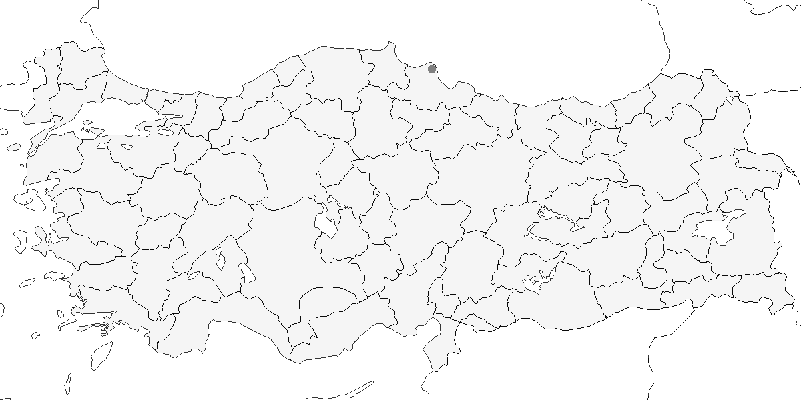

14 Çıvgınlar ve Yedikardeşler
Orman Çıvgını
Phylloscopus sibilatrix, Wood Warbler
Çok lokal olarak az sayıda üreyen bir yaz göçmeni, yaygın olarak ve nispeten çok sayıda görülen bir geçit türüdür.
Yıldız Dağları’nda yapılan kapsamlı bir çalışmada ürediği ilk kez kanıtlanmıştır1. Bu konuda ilk şüpheler, 27 Temmuz 1976’da Kırklareli Dereköy’ün kuzeyinde 5 birey ile oluşmuştur2. Giresun yakınından bildirilen 21 Temmuz 1966 tarihli kayıt ise3 sonradan reddedilmiştir4.
Bunun dışında yaygın ve oldukça bol bir geçit türüdür. Ara sıra çok yüksek sayılara ulaşabilir. Örneğin, 1992 nisan sonunda Akşehir Gölü’nde 500 birey kaydedilmiştir. Ancak ülkenin doğu bölgelerinde genellikle pek bol değildir. Baharda mart ortasından haziran başına kadar görülür ve yoğun geçiş nisanın ikinci yarısında gerçekleşir. Sonbahar göçü en erken temmuz ortasında başlar, genellikle ağustos başından ekim ortasına kadar devam eder. Ankara, Kastamonu, Erzurum5 ve İzmir’de (en geç 16 Ekim) kaydedilmiştir4. Çoğunluğu eylül ortasına kadar ülkeyi terk eder.

Üreme
Yuvalama alanı: Yaşlı ağaçlardan oluşan nemli yaprak döken ormanlarda yuvalar.
Yuvası: Yerde yapar.
Yumurta sayısı: Türkiye’de yumurta sayısı bilinmemektedir.
Üreme dönemi: Türkiye ilk yumurtlama muhtemelen mayıs ortasında gerçekleşir. Türün yılda bir kez kuluçkaya yattığı düşünülmektedir.
Alttürler ve Sınıflandırma
Monotipik bir türdür.
Boz Çıvgın
Phylloscopus orientalis, Eastern Bonelli’s Warbler
Lokal olarak ve çok sayıda bulunan bir yaz göçmeni ve geçit türüdür.
Esasen 300–2000 m arasındaki açık, yaprak döken ormanlarda (Akdeniz’de tipik olarak Pinus brutia içinde) bulunur, ancak Toroslar’da çoğunlukla bu rakım aralığının alt sınırlarında görülür. Karadeniz’in batısında ve Trakya’da, Ege, Akdeniz ve İç Anadolu’nun kuzey ve batı sınırlarında, tepelik ve dağlık bölgelerde az sayıda ürer. Kayıtların gösterdiğinden daha yaygın yayılışlı olabilir; örneğin, 4 Haziran 1969’da Yüksekova’da ürediği kanıtlanmış, yakın tarihte ise Şırnak’ta var olduğuna dair şüphelenilmiştir. Sümela Manastırı’nda 29 Mayıs gibi geç bir tarihte öttüğü kaydedilmiştir. Hatay’da açıkça uygun habitatlar belirlenmiş olmasına rağmen, türü hedefleyen arazi çalışmaları yapılmamıştır. Akdeniz bölgesinde geçit sırasında belirgin şekilde daha yaygın, Güneydoğu Anadolu’nun batı bölgelerinde ise noktasal yayılışlıdır.
Akdeniz ve Ege’nin kıyı kesimlerinde martın üçüncü haftasından itibaren kaydedilir, ancak daha iç ve kuzey kesimlerde nisan ortasına kadar yaygın değildir. Geçit, en azından doğu kesimlerde mayısın üçüncü haftasına kadar sürer. Doğu Anadolu’dan seyrek olarak geçit yapar. Doğu Karadeniz’de yalnızca bir kez, Mayıs 2004’te Trabzon’da kaydedilmiştir. Sonbahar göçü, kuşların çoğu eylül sonunda gitmiş olsa da, temmuz sonundan ekim ortasına kadar sürer. 1966 yılında Boğaz’da en yüksek sayılar temmuzun son haftasında görülmüş, ardından sayı hızla düşmüştür6. 17 Aralık 1969’da Bafa Gölü’nde bir birey7, Köprülü Kanyon Milli Parkı’nda ise Kasım 1990’dan en az Şubat 1991’e kadar birkaç birey olmak üzere iki kış kaydı vardır.

Üreme
Yuvalama alanı: Başlıca üreme alanları, yamaçlardaki açık ağaçlık (ibreli, yaprak döken ve karışık) alanlar ile seyrek ağaçlı fundalıklardır.
Yuvası: Yerde bir deliğin içine veya bir tümsek kıyısına yapılan yuva, ot, yaprak ve yosundan örülür ve ince ot, saç ve kökçüklerle astarlanır. Yuva kubbe şeklindedir ve yandan girişlidir.
Yumurta sayısı: Türkiye’de 1 yuvada 5 yumurta kaydedilmiştir.
Üreme dönemi: Türkiye genelinde ilk yumurtlama mayıs ortasında gerçekleşir. Yavrular haziran ortasından itibaren çıkar ve temmuz sonuna kadar yuvada kalır. Türün yılda bir kez kuluçkaya yattığı düşünülmektedir. DOA. 4 Haziran 1969’da Yüksekova’da yerde, bir ağaç gövdesinin yakınındaki bir yuvada 5 yumurta kaydedilmiştir. İÇA. 5 Haziran 1996’da Kızılcahamam’da küçük meşe ağaçlarının altında bulunan bir yuvada küçük yavrular bulunmuş ve ilk yumurtanın 19 Mayıs’ta bırakıldığı anlaşılmıştır. 20 Haziran 1983’te 3 tamamen tüylenmiş yavru, 10 Temmuz 1973’te tüylenmiş yavru, 24 Temmuz 1974’te ise 2 erişkin ve 2 yavrudan oluşan bir aile kaydedilmiştir8. EGE. 16 Haziran 1985’te Ayvacık’ta (Çanakkale) birçok aile grubu gözlenmiştir. AKD. 25 Mayıs 1989’da Akseki yakınında yuvasına yiyecek taşıyan bir erişkin, 15 Haziran 1987’de Kovada Milli Parkı’nda bir yuvada 1 çift kaydedilmiştir.
Alttürler ve Sınıflandırma
Boz Çıvgın, Bonelli Çıvgını ile Phylloscopus bonelli türünün altında sınıflandırılırdı. Batı Akdeniz’deki bonelli ile Doğu Akdeniz’deki orientalis popülasyonları arasındaki moleküler filogenetik ilişkiyi inceleyen bir çalışmada9, aralarındaki genetik farklılığın diğer Phylloscopus alttürleri arasında gözlenenden oldukça fazla olduğu sonucuna varılmıştır. Phylloscopus bonelli10,11, bu çalışmayla Bonelli Çıvgını (P. bonelli) ve Boz Çıvgın (P. orientalis) olarak iki türe ayrılmıştır12.
Sarı Kaşlı Çıvgın
Phylloscopus inornatus, Yellow-browed Warbler
Rastlantısal konuktur.
2008 yılına kadar 6 kaydı vardır: 10 Ekim 1967’de Ankara Çankaya’da 1 birey3, 17-18 Temmuz 1969’da Büyük Menderes Deltası’ndaki Karine’de 3 birey13, 16 Aralık 1976’da Ereğli (Zonguldak) 1 birey2, 11 Ekim 2003’te Manyas Gölü’nde halkalanan 1 birey14, 29 Ekim 2004’te İzmir Ege Üniversitesi yerleşkesinde 1 birey15 ve Kızılırmak Deltası’nda halkalanan tarihi ve birey sayısı bilinmeyen bir kayıt bulunmaktadır. 2 Mayıs 1915 ve 21 Ekim 1915 tarihlerinde Gelibolu’dan bildirilen kayıtlar16, nadir türlerin belgelenmesi ile ilgili modern standartları kesinlikle karşılamadıkları gerekçesiyle reddedilmiştir5.
Sarı Kaşlı Çıvgın’ın Ortadoğu’daki kış kayıtlarının çoğu, taksonomik ve saha tanımlamasındaki gelişmeler nedeniyle17, yakın zamanda netleşmiş olan Ak Kaşlı Çıvgın‘aye ait olabilir18,19. Özellikle eski kayıtların bir kısmının Ak Kaşlı Çıvgın’ı içermesi kuvvetle muhtemeldir, çünkü kayıtların üçü, bu iki türü sahada ayırt etmeye yardımcı olan çalışmaların henüz yapılmadığı dönemlere aittir.

Üreme
Türkiye’de yuvalamaz. Üreme dönemi yayılış alanı Doğu Sibirya’dır. Kışı Güneydoğu Asya’da geçirir.
Alttürler ve Sınıflandırma
Monotipik bir türdür. Yakın geçmişe kadar Ak Kaşlı Çıvgın ile türdeş (konspesifik) kabul edilmekteydi, ancak morfolojik özellikler ve vokalizasyon farklılıkları bu iki formun tür seviyesinde ayrıldığını göstermektedir20.
Ak Kaşlı Çıvgın
Phylloscopus humei, Hume’s Leaf Warbler
Rastlantısal konuktur.
İlk kez, 28 Aralık 1994’te İstanbul Topkapı Sarayı’nda görülen ve ayrıntılı şekilde tanımlanan birey, Hollanda Nadir Türler Komitesi tarafından kabul edilmiştir21. Türkiye’de son yıllarda farklı bölgelerde de gözlenmiştir. Muğla Göcek ve Limanları’nda 5–11 Aralık 2022 tarihleri arasında (E. Yoğurtçuoğlu), Hatay Subaşı’nda 19–20 Aralık 2022’de (A. Atahan, M. Atahan, N. Aydın, O. Gül) ve 21 Ocak 2023’te (A. Atahan, M. Atahan, M. Gül) birer birey kaydedilmiştir. İstanbul Atatürk Fen Lisesi’nde 10 Mart–10 Nisan 2023 tarihleri arasında (K. Öğreten) uzun süreli gözlem yapılmıştır. Doğu bölgelerde, Iğdır Aras Kuş Halkalama İstasyonu’nda 12–13 Mart 2024’te (K. Ağırkaya, K. Derneği, D. Kitel) bir birey tespit edilmiştir. Marmara kıyısında yer alan Kocaeli Kefken’de 26 Ocak 2024’te (H. Fırat) bir birey kaydedilmiştir. Karadeniz kıyısındaki Samsun Batıpark’ta 16–17 Mart 2023’te (M. Erturhan) ve tekrar 20–27 Mart 2024’te (Ö. F. Durdu) aynı lokasyonda bir birey gözlenmiştir. Samsun Kızılırmak Deltası’nda 9–11 Mart 2024’te (C. Gönel) kaydedilmiştir. Doğu bölgelerde ise 12–13 Mart 2024’te Iğdır Aras Kuş Halkalama İstasyonu’nda bir birey tespit edilmiştir (K. Ağırkaya, K. Derneği, D. Kitel). Marmara kıyısında yer alan Kocaeli Kefken’den ise 26 Ocak 2024’te (H. Fırat) tek birey kaydedilmiştir.

Üreme
Türkiye’de yuvalamaz. Üreme dönemi Doğu Asya’nın ılıman kuşağında geçer. Kış aylarında Hindistan ve çevresinde bulunur.
Alttürler ve Sınıflandırma
Türkiye’de gözlenen bireylerin büyük olasılıkla humei nominata ait olduğu düşünülmektedir. Çin’de görülen mandellii alttürünün Batı Palearktik’te görülme ihtimali son derece düşüktür. Yakın geçmişe kadar Sarı Kaşlı Çıvgın ile türdeş (konspesifik) kabul edilmekteydi, ancak morfolojik özellikler ve vokalizasyon farklılıkları bu iki formun tür seviyesinde ayrıldığını göstermektedir20.
Çalıkuşu Çıvgını
Phylloscopus proregulus, Pallas’s Leaf Warbler
Rastlantısal konuktur.
Sonbahar ve kış dönemine ait kayıtlar, türün özellikle kuzeydeki sulakalanlar ve yerleşim alanlarına yakın bölgelerde düzenli olarak gözlendiğini göstermektedir. Samsun’daki Kızılırmak Deltası’nda 22 Ekim 2011’de (N. Yavuz), 6 Kasım 2014’te (F. Başbuğ), 17 Ekim 2017’de (U. Güngör, E. Kayhan, E. Yoğurtçuoğlu, O. Çiçek) ve 26 Ekim 2021’de (E. Yoğurtçuoğlu) olmak üzere dört kayıt bildirilmiştir. İstanbul’daki İTÜ Ayazağa Kampüsü’nde 1 Kasım 2022’de gözlenen birey 30 Aralık 2022’ye kadar izlenmiş, aynı birey ya da başka bir birey 1 Ocak 2023’te tekrar kaydedilmiş ve 13 Nisan 2023’e kadar alanda kalmıştır (Ö. Ekincioğlu, R. Hamdi). Ayrıca 2 Kasım 2022’de Iğdır’daki Aras Kuş Halkalama İstasyonu’nda (K. Derneği, D. Kitel, M. Ko) ve 13 Kasım 2022’de Bursa’daki Kocaçay Deltası’nda (A. Tüydeş) birer birey kaydedilmiştir.

Üreme
Türkiye’de yuvalamaz. Üreme dönemi Kuzey Doğu Asya’da geçirir. Kış aylarında Güney Çin’de bulunur.
Alttürler ve Sınıflandırma
Monotipik bir türdür.
Esmer Çıvgın
Phylloscopus fuscatus, Dusky Warbler
Rastlantısal konuktur.
Sonbahar geçişine ait güncel kayıtlar sınırlıdır. Samsun’daki Kızılırmak Deltası ve çevresinde 24 Ekim 2013’te Boytar Kanalı ağzında bir birey (E. Yoğurtçuoğlu), 30 Ekim 2015’te Cernek Gölü’nde bir birey (F. Başbuğ, E. Yoğurtçuoğlu; son görülme: 2 Kasım), 13 Ekim 2016’da halkalama istasyonunda bir birey (A. G. Ergen) ve 26 Ekim 2021’de Kuş Cenneti alanında bir birey (E. Yoğurtçuoğlu) kaydedilmiştir. Ayrıca 2 Ekim 2017’de Iğdır’daki Aras Kuş Halkalama İstasyonu’nda bir birey yakalanmıştır. Bu kayıtlar, türün özellikle kuzeydoğu ve kuzey kıyı bölgelerinde sonbaharda düzenli ama seyrek geçtiğini göstermektedir.

Üreme
Türkiye’de yuvalamaz. Yayılış alanı Doğu Asya’dır.
Alttürler ve Sınıflandırma
Monotipik bir türdür.
Söğütbülbülü
Phylloscopus trochilus, Willow Warbler
Yaygın olarak çok sayıda bulunan bir geçit kuşudur.
Baharda kuzeyde ve doğuda mart sonu ya da nisan başından itibaren görülmeye başlanır. Geçit kimi zaman haziranın ilk haftasına kadar sürse de, en yüksek yoğunluk genellikle mayısın ilk yarısında gerçekleşir. Ara sıra çok yüksek sayılarla kaydedildiği olmuştur. Örneğin, 11 Eylül 1970’te İstanbul Büyük Çamlıca’da yaklaşık 3000 birey ve 18 Eylül 1968 ile 28 Ağustos 1971’de Uludağ’da benzer sayıda birey gözlenmiştir. Sonbaharda ağustos başından itibaren kaydedilmiş, en yüksek sayılar ise eylül ile ekim ortası arasında gözlenmiştir. Geç kalan bireyler ekim sonu ve muhtemelen daha ileriki tarihlere kadar rastlanmıştır. Ancak gözlemcilerin çoğunun geçit noktalarında bu tür ile çıvgını ayırt etmemesi nedeniyle göçün uç tarihlerini kesin belirlemek zordur. Türün en az 2400 metre yüksekliğe kadar kaydedildiği bilinmektedir.
Marmara’da ara sıra kışladıklarından bahsedilmiştir22. Büyük Menderes Deltası’nda biri 19 Ocak 1969’da ötüşüyle tanımlanan (ve böylece sıkça kışlayan çıvgın ile karıştırılması önlenen) bir bireye, diğeri ise 24–29 Ocak 1972 tarihleri arasında gözlenen bir veya iki bireye ait iki yayımlanmış kayıt vardır4,13. Ayrıca 31 Aralık 1986’da Dalyan’da bacak rengi temel alınarak iddia edilen bir başka kayıt daha bildirilmiştir23.

Üreme
Türkiye’de yuvalamaz. Kuzey Avrupa’da yuvalar ve oradakie en yaygın yaz göçmenlerindendir. Türkiye’de öten kuşların varlığı nedeniyle üreme ihtimali hep değerlendirilmiş, ancak Kuş Atlası çalışmasında bile üremeyle ilgili somut bir delil toplanamamıştır24.
Alttürler ve Sınıflandırma
Genellikle üç alttür tanınmaktadır. Bunlar; Avrupa’nın kuzeybatısından Polonya ve Romanya’ya kadar doğuda üreyen nominat trochilus alttürü, daha yüksek enlemlerde, İskandinavya’dan Yenisey’e kadar üreyen acredula alttürü ve Orta ile Doğu Sibirya’da üreyen yakutensis alttürüdür. İç Anadolu ve Doğu Anadolu’dan geçenlerin çoğunun acredula alttürü olduğu bildirilmiştir25. Ancak acredula alttürü ile nominat trochilus alttürü arasında geçiş olduğuna dair kanıtlar bulunmaktadır26 ve acredula alttürünün tanınmaya değer olup olmadığı tartışmalıdır. Yakutensis alttürü en nadir olmak üzere, tümü göç sırasında İsrail’de gözlenmiştir27 ve büyük olasılıkla Türkiye için de durum aynıdır. Bu üç alttür, eldeyken dahi oldukça zor ayırt edilebilmektedir28. 1998 yılında Kızılırmak Deltası’nda halkalanan 256 bireyin yarısından fazlasının kanat uzunlukları, en çok yakutensis alttürü değerlerine yakın bulunmuştur. Doğu Karadeniz kıyılarında yakutensis alttürü benzeri formların, acredula alttürü olarak değerlendirilen bireylerden daha sonra geçtiği kaydedilmiştir29, ancak bu iki alttürün geçiş tarihleri kesin olarak çakışmaktadır. Nominat trochilus alttürünün esas olarak batıda bulunduğu düşünülmektedir. Yukarıda tanımlanan alttürlere dâhil edilmesi gereken iki forma ait kayıtlardan bahsedilmiştir5; bunlar, Urfa ve Ankara’da kaydedilen ve acredula alttürü ile ilişkilendirilebilecek eversmanni alttürü ile, Amik Gölü ve Akdeniz bölgesinde kaydedilen ve nominat trochilus alttürü ile sinonim kabul edilen fitis alttürüdür.
Kafkas Çıvgını
Phylloscopus sindianus, Mountain Chiffchaff
Lokal olarak nispeten çok sayıda bulunan yaz göçmeni ve geçit türüdür.
Karadeniz’in doğusundan güneye, Doğu Anadolu’nun kuzeydoğu sınırlarına ve Zigana Geçidi’nin doğusuna kadar yayılır30. Bingöl Dağları’nda birbirinden uzak noktalardan kayıtlar vardır. Aras Nehri Vadisi’nin güneyinden ise çok az kayıt alınmıştır. Dorèl, 29 Haziran 1991’de Kızılcahamam’da gözlenen bir bireyin lorenzii alttürüne benzerliğinden bahsetmiştir30, ancak ayrıntılarını görmediğimiz bu kayıt Çıvgın’ın brevirostris alttürü ile karışmış olabilir. Esasen 1700 m’nin üzerindeki yaşlı çam ve ardıç ormanlarında ürer, ancak özellikle nehir ve derelerin kenarlarında yer alan açık çalılıklar ve seyrek yaprak döken ağaçlıklarda da bulunur.
Geliş ve gidiş tarihleri hakkında çok az bilgi bulunmaktadır. Mart ortasında Kafkaslardan kaydı olsa da Türkiye’ye nisan ve mayıs başı arasında geldiği tahmin edilmektedir. Sonbahar göçü büyük olasılıkla ağustos başından ekim ortasına kadar sürer. 5 Ağustos 1981’de Van Gölü’nün güneyindeki Çatak yakınlarında bir birey kaydedilmiştir31. Türkiye’de üreme bölgeleri dışındaki alanlardan neredeyse hiç kayıt bulunmaması, türün genel davranışları hakkında bilgimizin son derece sınırlı olduğunu göstermektedir. Kuveyt’te lorenzii alttürüne ait olduğu kesinleşmiş iki ilkbahar kaydı olmasına rağmen32, şimdiye kadar birçok yazar lorenzii alttürünün sadece irtifa göçü yapıyor olabileceğini düşünmüştür. Kış döneminde bir kez, 1 Ocak 2005’te Adana’da kaydedilmiştir. Ermenistan’da ise kuşlar kasım sonuna kadar kalabilir ve ekim ayında büyük sayılarla görülebilir33.

Üreme
Yuvalama alanı: 1700 m’nin üzerindeki açıklık yaprak döken ve ibreli ormanlardaki ağaç altı bitkileri ve çalılar içinde ürer. Genellikle Çıvgın’dan daha yüksek rakımlarda bulunur. Gelinkaya ve Yoncalık (Erzurum) çevresi alanlarda, altlarında çalı ya da sık vejetasyon olan bölgelerinin çoğu nemli ya da kısmen su basmış olduğu küçük kavak fidanlığı, yaşlı söğütler ve diğer yaprak döken ağaçlardan oluşan bir baltalık ve hemen nehrin kıyısındaki uzun, sık söğüt ağaçlıkları ve diğer çalılardan oluşmaktadır.
Yuvası: İncelenen yuvaların ikisi, diğer bazı çıvgın türlerinde olduğu gibi yerdeki bir oyukta değil, yerdeki vejetasyona dayanacak şekilde tam anlamıyla yerdedir. Yuva Çıvgın yuvası gibi kubbeli ve yandan girişliydi, ancak dış kısmında genel olarak daha az yaprak bulunuyordu. Ağırlıklı olarak bitki gövdeleri, ot ve birkaç yapraktan oluşan, tüylerle kalın bir şekilde astarlanmış olan yuvanın tas kısmı daha çok saç ve biraz kürk ile astarlanmıştı. Tabanı ve tepesi 110 mm genişliğinde, girişi ise 30 mm genişliğinde ve 25 mm derinliğinde olan bir yuva 120 mm yüksekliğindeydi. Yuvalar yerde veya yerden 0,1–0,3 m yükseklikteki vejetasyon üzerinde bulunur.
Yumurta sayısı: Türkiye’de 1 yuvada 4 yavru ve 1 yumurta, 1 yuvada 2 yavru ve 1 yumurta, 1 yuvada 5 yumurta ve 1 yuvada 6 yumurta kaydedilmiştir.
Üreme dönemi: Türkiye genelinde ilk yumurtlama mayıs sonu civarındadır. Yavrular haziran ortasından itibaren çıkar ve temmuz sonunda yuvayı terk eder. KAD. Gelinkaya ve Yoncalık (Erzurum) arasında yapılan çalışmalarda, 11 Temmuz 1975’te yanında yavru olan üç çift kaydedilmiş, Haziran 2004’te beş yuva bulunmuştur. 10 Haziran 2004’te bir yuvada yeni çıkmış dört yavru ve bir yumurta, diğer bir yuvada ise iki yavru ve bir yumurta kaydedilmiştir. 11 Haziran 2004’te başka iki yuvada sırasıyla beş ve altı yumurta bulunmuş, bu yumurtalardan 21 Haziran 2004’te 1-2 günlük altı yavru çıkmıştır. Beşinci yuvada 23 Haziran 2004’te dört yavru gözlenmiş ve 25 Haziran’da yuvayı terk etmişlerdir. Dişi ve erkek bireylerin yavruları birlikte beslediği görülmüştür. Ağustos ayına kadar öten erkek bireylerin varlığı türün yılda iki kez kuluçkaya yatabileceğini düşündürmektedir.
Alttürler ve Sınıflandırma
Türkiye’de Doğu Karadeniz ve Kafkaslar’da görülen lorenzii alttürü bulunur. Lorenzii alttürü bazı kaynaklarca Tien Şan ve Himalayalar’da görülen sindianus alttüründen ayrı bir tür olarak değerlendirilmiştir30,34. Bu iki formun ortak bir atadan mı geldikleri yoksa Çıvgın’ın Sibirya’da bulunan tristris alttüründen mi türedikleri konusu belirsizdir. Sindianus ve lorenzii alttürlerinin vokalizasyonlarındaki bazı farklılıklar, bu iki formun birbirinden uzak akraba olabileceğinin kanıtı olarak gösterilmektedir35. Ancak iki taksonun ayrı tür olarak kabul edilmesi konusunda bir uzlaşmaya varılamamıştır. sindianus ve lorenzii alttürlerinin kendine özgü bir grup oluşturduğu mtDNA dizilimi ile teyit edilmiştir.
Yakın zamanda Kafkaslar’da lorenzii ile parapatrik bulunduğu iddia edilen, ancak yayılışı pek bilinmeyen Çıvgın’ın caucasicus alttürü ile durum daha da karışmıştır. Lorenzii alttürünün diğer bölgelerdeki Çıvgın’ın brevirostris ve caucasicus alttürlerinden genetik olarak oldukça farklı olduğu gösterilmiştir36. Bu türü Çıvgın altında değerlendirme önerileri35,37 dikkate alındığında, sindianus ve lorenzii alttürlerinin tür seviyesinde ayrılması önerilmişse de DNA çalışmalarının bulguları bu yöndeki önerileri doğrulamamaktadır. Sindianus alttürünü önce lorenzii ile birlikte bir tür olarak10, sonra sindianus alttürünü Çıvgın ile değerlendirip lorenzii alttürünü monotipik bir tür olarak11 ve en sonunda lorenzii alttürünü tekrar Kafkas Çıvgını’nın alttürü olarak kabul edecek şekilde38 fikir değiştirmeleri, konunun zorluğunu ortaya koymaktadır.
Burada ele alınan tüm formlar ve Batı Palearktik’teki bütün Çıvgınlar arasındaki ilişki üzerine yapılan tartışmaların en kapsamlısı hâlâ35 çalışmasında yer almaktadır. lorenzii ve brevirostris alttürlerinin elde tanımlanması konusu ve lorenzii alttürünün sahada tanımlanması30,33 çalışmalarında ele alınmıştır. Kuzeydoğu Türkiye’de bulunan Çıvgınlar ile ilgili problemlerin araştırılması için yapılan çağrı ise,39 tarafından yapıldığı dönemde olduğu gibi bugün de geçerliliğini korumaktadır.
Çıvgın
Phylloscopus collybita, Common Chiffchaff
Yaygın olarak ve çok sayıda bulunan bir yaz göçmeni, geçit türü ve kış konuğudur.
Marmara’nın çoğunluğunda, İç Anadolu’nun kuzey kesimlerini de kapsayacak şekilde Karadeniz’in batı ve orta bölgelerinde ve muhtemelen Doğu Anadolu başta olmak üzere ülkenin büyük bölümünde yerli ya da yarı göçmen olarak görülür. Kocaçay Deltası’nda deniz seviyesindeki alüvyal ormanda bolca ürer; tahmini popülasyon büyüklüğü 350-380 çifttir ve 1993’de 31 hektarlık bir örnekleme alanında hektar başına 0,52 öten erkek düştüğü gözlenmiştir40. Ege’nin dağlık kıyıları, Toroslar ve Lübnan sınırına kadar tüm Hatay’da dağınık kayıtlar mevcuttur. Doğu Anadolu’nun güneydoğusunda ürediği düşünülmektedir. Asıl üreme alanları 500–2000 metre arasındaki yaşlı ağaçlık bölgeler olsa da, özellikle kuzeybatıda deniz seviyesine kadar inebilir ve doğuda daha yüksek rakımlarda da rastlanabilir. Kafkas çıvgınının yayılış alanından kesin bir kayıt bulunmamaktadır. Çoğu batı ve güney bölgesinin kıyı kesimlerinde kışlar, ancak daha az sayıda birey kış döneminde ülkenin batı ve orta kesimlerine dağılır.
Yerli nüfusun fazla olması nedeniyle göç tarihlerinin kesin şekilde belirlenmesi zordur. Bahar göçü büyük olasılıkla mart başında başlar, çoğu birey nisan ortasına kadar güney ve orta bölgelerden geçişini tamamlar ve doğu bölgelerde mayısın ikinci ya da üçüncü haftasına kadar devam eder. Güney ve batıdaki kışlama bölgeleri nisan sonunda tamamen terk edilir. Kuzey bölgelerde geçiş de nisan sonunda genel olarak sona erer41,42. Sonbahar göçü ise ağustos başında başlayarak en az ekim sonuna, muhtemelen kasım ayına kadar sürer. Geçiş sırasında görülen birey sayısı genellikle Söğütbülbülü’ne göre daha düşüktür. Doğu bölgelerinde göç sırasında daha bol ve yaygın olarak gözlenir. Bu durum Kafkas çıvgınının üreme alanlarını da kapsar.

Üreme
Yuvalama alanı: Deniz seviyesinden 2000 m’ye kadar, hem düzlük yerlerde hem de yamaçlarda, yaprak döken, ibreli ve karışık yaşlı ormanlarda, orman altı bitki örtüsünde ürer. Kocaçay Deltası’ndaki alüvyal ormanda ve Uludağ’da 800 m üzerindeki yarı açık alanlarda bolca bulunur40;43.
Yuvası: Yuvasını genellikle alçak bir çalıya ya da yeşilliklerin içine yapar. Yuva bitki gövdeleri, yosun ve yapraklardan oluşur, içi ise tüylerle astarlanmıştır. Yapısı yandan girişli ve kubbelidir. Kızılcahamam’da 22 Mayıs 1996’da bulunan yuva Avrupa’daki örneklerle tamamen aynı yapıdadır44.
Yumurta sayısı: Türkiye’de gözlenen tek kayıt 5 yumurtadır.
Üreme dönemi: Türkiye genelinde ilk yumurtlamalar mayıs ayı ortasında gerçekleşir, yavrular haziran başında çıkar. Ağustosa kadar ötüşlerin devam etmesi, yılda iki kez kuluçkaya yatabileceğini düşündürmektedir. İÇA. 22 Mayıs 1996’da Kızılcahamam’da içinde 5 yumurta ile bulunan yuvanın Avrupa’da görülenlerden farksız olduğu not edilmiştir. Şöyle ki bu yuva bitki gövdeleri, yosun ve yapraklardan yapılma, tüylerle astarlı yandan girişi olan kubbeli bir yuvadır44. Haziran başında Kızılcahamam’da aile grupları gözlenmiştir. MAR. 16 Mayıs 1966’da Çatal Dağı’nda, 300 m’deki kayın ormanında yiyecek taşıyan erişkin ve 22 Haziran 1973’te Demirköy’de yanında tüylenmiş yavru olan çift kaydedilmiştir. 1967’de Çamlıca Tepesi’nde beş çift üremiştir. KAD. 15 Haziran 1975’te Kopdağı Geçidi’nde (Bayburt) yiyecek taşıyan bir erişkinin Kafkas Çıvgını olabileceği düşünülmüştür.
Alttürler ve Sınıflandırma
Büyük olasılıkla üreyen tüm kuşlar brevirostris alttürüe aittir. Bu formun nominat collybita alttüründen kesin olarak ayrılamayacağını ileri sürülmüştür30. Kuzeydoğu Anadolu’da Kafkas Çıvgını ile birlikte göç eden brevirostris bireylerinin abietinus ve Kafkas Çıvgını arasında bir geçiş formu olabileceği öne sürülmüş39, ancak bu görüş geniş kabul görmemiştir. Ayrıca, Doğu Karadeniz’de üreme döneminde yapılan ziyaretlerde bu tür bir geçiş formuna veya Kafkas Çıvgını dışındaki çıvgın formlarının kesin varlığına dair bir bulguya rastlanmamıştır, dolayısıyla Doğu Karadeniz’de lorenzii ile parapatrik olarak bulunur.
Türkiye’ye endemik brevirostris alttürünün Strickland tarafından toplanan holotipi Cambridge Üniversitesi Zooloji Müzesi’nde bulunmaktadır (CUMZ27/Syl/63/e/1). Daha sonra brevirostris, collybita içinde değerlendirilmiştir36. Ancak bu sınıflandırmayı savunmak için daha ayrıntılı araştırmalar gerekmektedir; çünkü çalışmalarda bu forma ait yalnızca çok az sayıda mitokondriyal DNA örneğine ulaşılabilmiştir. Oysa nominat collybita ile brevirostris/caucasicus grupları arasında sitokrom b geni diziliminde ve morfolojik özelliklerde görülen farklılıklar, bu grupların uzun süredir farklı kollar üzerinde evrimleştiklerini göstermektedir. Elde edilen veriler brevirostris/caucasicus grubunun, collybitadan çok doğuda bulunan abietinusa yakın olduğunu işaret etmektedir. Strickland yalnızca kasım ayında toplanan bir örneği temel alarak39, dolayısıyla ürediği kesin olmayan bireylerden yola çıkarak bu taksonu tanımlamıştır. Bu nedenle brevirostris’in gerçek bir alttür olup olmadığı mutlaka yeniden sorgulanmalıdır. Ayrıca caucasicus tanımının şüpheli bir hükme dayandığı da kesindir.
Göç sırasında abietinus ve tristis formlarına da rastlanmış, ancak yoğunlukları genel olarak bilinmemektedir. İç Anadolu’daki çalışmaları sırasında tristis formuna hiç rastlanmamıştır25. İncelenen tüm bireyler abietinus formuna aittir. Nisan ayının ortasından sonuna kadar Kuzeydoğu Anadolu’da tristis olduğu düşünülen birkaç birey gözlenmiştir29. Urallar ile Yenisey arasında üreyen, ancak büyük olasılıkla Phylloscopus sindianus türüne daha yakın olan ve tanımı son derece zayıf olan fulvescens formuna yalnızca bir kez, 21 Eylül 1991’de Uludağ’da rastlanmıştır43. Türkiye’de kışlayan kuşların hangi alttürlere ait oldukları kesin olarak bilinmemektedir. Bu kuşların bir kısmı kuzeyden gelen bireyler olabilir. Örneğin, Kıbrıs’ta kış döneminde görülen kuşların bir kısmı abietinus formuna aitken, çoğunluk nominat collybitaya benzemektedir. Tristis bireylerini özellikle elde incelemeden kesin olarak tanımlamak ve fulvescens formunun taksonomik durumunu belirlemek oldukça zordur. Bu durum45 tarafından ustaca dile getirilmiştir. Ayrıca, tristis formuna ait olduğu iddia edilen birçok kaydın hatalı olabileceği çok olasıdır.
Yeşil Çıvgın
Phylloscopus nitidus, Green Warbler
Lokal olarak az sayıda bulunan yaz göçmenidir.
Karadeniz Bölgesi’nin büyük bölümünde ve batıda en azından Kartepe’ye kadar olan yüksek irtifalı alanlarda, yaprak döken ve karışık ormanlarda, zaman zaman ibreli ağaçlık alanlarda ve düzensiz yayılışlı ormangülü çalılıklarında ürer. Batı kesimlerinde 800–1500 metre aralığında, kuzeydoğuda ise en az 2300 metre yükseklikte kaydedilmiştir. Doğu Karadeniz’de bazen deniz seviyesine daha yakın bölgelerde de ürediği gözlenmiş, ancak düşük rakımlardan çok az sayıda kayıt alınmıştır. Bölgenin doğusunda daha bol birey bulunur. Sık gözlem yapılmayan Orta Karadeniz’de ise kayıtlar daha seyrektir. Uygun habitatlara sahip ve sıkça ziyaret edilen Uludağ’da 18 Temmuz 1998’de 1–2 birey gözlenmiştir. Bu bölgenin hemen bitişiğindeki İç Anadolu’nun kuzey dağlık sınırlarında da, örneğin Haziran 1996 ortasında Kızılcahamam Milli Parkı’nda, açıkça üreme alanı savunan bireyler kaydedilmiştir.
Göç sırasında özellikle doğu bölgelerinde görülmesi beklenmekle birlikte çok az sayıda kayıt alınmıştır. Yukarıda Yeşilimsi Çıvgın ile ilgili belirtilen bazı kayıtlar ya da tamamı nitidus formuna ait olabilir. Ege Bölgesi, Güneydoğu Anadolu ve Doğu Anadolu’dan nitidus formuna ait geçit kayıtları bildirilmiştir46. Üreme alanları en azından mayıs başından ekim başına kadar tutulur. Geçit yapan bireylere ise sonbaharda eylül sonunda ve ilkbaharda mayıs ortasına kadar rastlanır.

Üreme
Yuvalama alanı: Yaprak döken, ibreli veya karışık yaşlı ormanlarda, genellikle dik ve nemli yamaçlarda bulunur. Erişkinin yuvasına yaklaşırken giderek daha alçak tünekler sağladığı, birkaç Phylloscopus türünde tipik olan davranış biçimi gözlenmiştir. Alt dalların neredeyse tabana değdiği küçük kayranların ucunda ya da açık alanlarda, ot öbekleri, seyrek çalılık veya yüksek dağınık çalılıklarla kaplı açık alanları tercih eder.
Yuvası: Yuva yerde bir çukurda, bir öbek bitki ile bir parça gizlenmiş şekilde yapılır. Yosun, ot ve yapraklardan oluşur, içi daha ince ot ve biraz saç ile astarlanmıştır. Yuva tepeden kubbeli ve yandan girişlidir.
Yumurta sayısı: Türkiye’de gözlenen yumurta sayısı 6 (2 yuvada).
Üreme dönemi: Türkiye genelinde ilk yumurtlamalar mayıs sonu ile haziran başında gerçekleşir, yavrular haziran sonu ve temmuz başında çıkar. KAD. 1992’de Abant Gölü yakınında dik bir yamaçtaki kayın ağırlıklı ağaçlık alanda yerde iki yuva bulunmuştur47. 29 Mayıs’ta biri tamamlanmak üzere, diğeri tamamlanmış ama henüz yumurtasız olan iki yuva bulunmuş, 3 Haziran’da sırasıyla 2 ve 3 yumurta kaydedilmiştir. 20 Haziran’da bir yuvada 6 terk edilmiş yumurta, diğerinde 6 yeni yumurtadan çıkmış yavru bulunmuştur; kuluçka süresi en fazla 14 gün olarak tahmin edilmiştir. Bafra’da 15 Temmuz 1986’da yiyecek taşıyan bir erişkin kaydedilmiştir. Doğu Karadeniz’de 13 Haziran 1975’te ladin ormanındaki bir açıklıkta yerdeki yuvasına yiyecek taşıyan bir erişkin, 12 Temmuz 1986’da Sivrikaya’da tırtıl taşıyan bir erişkin ve 26 Temmuz 1986’da kayın ağaçlarıyla karışık küçük çamlarda beslenen iki aile grubu gözlenmiştir. Sümela Manastırı’nda 14 Temmuz 1986’da (R. Webb) ve 13 Temmuz 1990’da48 yavrularını besleyen erişkinler, 16 Haziran 1975’te yiyecek taşıyan erişkinler ve 15 Temmuz 1992’de bir aile grubu kaydedilmiştir. Haziran–ağustos ayları arasında (en geç 8 Eylül) öten erkek bireylere rastlanması, türün Türkiye’de yılda iki kez kuluçkaya yatabileceğini düşündürmektedir. Ancak diğer yerlerde yılda tek kuluçka olağandır.
Alttürler ve Sınıflandırma
Yeşil Çıvgın son taksonomik revizyonun ardından monotipik bir türdür. Yeşil Çıvgın, eskiden Yeşilimsi Çıvgın ile aynı tür içinde sınıflandırılmış ve bilimsel adı Phylloscopus trochiloides nitidus olarak Yeşilimsi Çıvgın’ın bir alttürü kabul edilmiştir. 1970 ve 1980’li yıllarda nitidus’un tür olarak yaygın şekilde kabul edilmesinin ardından49, bu form tekrar Yeşilimsi Çıvgın’ın bir alttürü olarak değerlendirilmiştir.50 nitidus’un Yeşilimsi Çıvgın grubu içindeki “benzersiz” konumunu vurgulamak amacıyla üçlü bir isimlendirme kullanmayı tercih etmiştir. Daha sonra51, bu formun tür statüsüne alınmasını savunmuştur. Mitokondriyal DNA çalışmaları, nominat trochiloides ile nitidus arasındaki genetik farklılığın, çoğu alttür arasındaki farklılıklardan daha büyük olduğunu ortaya koymuştur9. Bu bulgular doğrultusunda, sonraki yazarlar Yeşil Çıvgın’ı trochiloides üsttürü içinde allopatrik bir tür olarak değerlendirmiştir.
Ancak Yeşilimsi Çıvgın grubu, özellikle Orta ve Doğu Asya’daki karmaşık dağılımı nedeniyle52–54 yeniden değerlendirilmiştir. Yapılan çalışmalar, nitidus’un %100 tanımlayıcı bir tüy örtüsüne ve biyometrik ölçümlerde belirgin farklara sahip olmadığını, ayrıca viridanus ile ötüşleri arasında açık bir farklılık bulunmadığını göstermiş ve bu nedenle nitidus’un şimdilik alttür statüsünün korunmasına karar verilmiştir. Buna rağmen55 ve56 gibi bazı yazarlar, nitidus’a daha yüksek bir taksonomik konum vermeyi tercih etmektedir.
Yeşil ve Yeşilimsi Çıvgın’ın sadece allopatrik yayılış göstermesi ve nitidus’un özgünlüğünün genel kabul görmesi, bu formların türdeş (konspesifik) sayılmasına yeterli bir gerekçe oluşturmamaktadır.57 ve onu takip eden yazarlar, nitidus ile trochiloides arasında bir geçiş formuna dair kanıt bulamamıştır. Türün sahada tanımlanması süreci58 ve59 tarafından ayrıntılı şekilde ele alınmış ve54 tarafından özetlenmiştir. Nitidus’un tanınmasında yaşanan zorluklar,60’ün hem sahada hem de örneklerde P. t. viridanus ve nitidus arasında önemli ölçüde örtüşme olduğunu belirttiği çalışmasından kaynaklanmış gibi görünmektedir. Ancak bu doğru değildir. Nitidus ile viridanus arasındaki morfolojik farklılık çok belirgin değildir, fakat her iki formun bireyleri çoğunlukla doğru şekilde tanımlanabilir ve ayırt edici özellikleri, aynı cinse ait farklı türler arasında görülen farklılıklarla karşılaştırılabilir düzeydedir.
Nitidus’un ötüşünün viridanus’unkinden belirgin şekilde farklı olmaması şaşırtıcı değildir; çünkü nitidus, Yeşilimsi Çıvgın kompleksi içinde coğrafi olarak iyi şekilde izole olmuş ve bu nedenle plumbeitarsus gibi yayılışı viridanus ile çakışan formlar gibi farklı bir vokal repertuar geliştirmeye ihtiyaç duymamıştır. Türkiye’nin kuzeydoğusunda yapılan sınırlı sayıdaki sesle çağırma deneyimlerinde, Yeşil Çıvgın’ın Yeşilimsi Çıvgın’ın ötüşüne nadiren ve zayıf şekilde karşılık verdiği gözlenmiştir.
Hindistan Yarımadası’ndaki kışlama alanlarında, nitidus ve viridanus arasında ötüş farklılıkları belirlenmiş ve bu türler habitat tercihleri ve rakım dağılımları bakımından da ayrılabilmiştir55,61. Ayrıca, mtDNA verileri9 nitidus’un Yeşilimsi Çıvgın kompleksinin diğer üyelerinden evrimsel olarak ayrıldığını göstermektedir. Phylloscopus nitidus, daha düşük rakımlarda ve ılıman ormanlarda görülse de, yaygın ve göçmen olan viridanus’un kardeş taksonudur.
Benzer bir durum Doğu Pasifik bölgesinde de görülmekte ve burada geçmişte tamamı Phylloscopus proregulus olarak sınıflandırılan üç, belki de dört farklı popülasyon tanımlanmaktadır: P. proregulus, chloronotus/simlaensis ve kansuensis. Çin’in Çinghay, Kansu ve Siçuan eyaletlerinde yapılan çalışmalar62,63, vokalizasyon ve habitat farklılıklarının ayrıntılı incelenmesiyle, morfolojik olarak az farklılık gösteren Phylloscopus popülasyonlarının tür düzeyinde taksonlar içerdiğini ortaya koymuştur.
Kuzey Çıvgını
Phylloscopus borealis, Arctic Warbler
Rastlantısal konuktur.
25 Ekim 2002’de Kızılırmak Deltası’nda halkalanan ve fotoğraflanan bir bireye ait tek bir kayıt bulunmaktadır64. Ayrıntılı tanımlama ve bir miktar biyometrik veri elde edilmiştir. Ayrıca, Ağustos 1988’de Manavgat’ın 30 kilometre kuzeyinde görüldüğüne dair yayımlanmamış bir iddia vardır. Ancak bu iddia, tanımlamanın yetersiz olması nedeniyle, benzer bir çıvgın olan Yeşil Çıvgın ile karıştırılma ihtimalini ortadan kaldırmamaktadır65. Yunanistan’dan Nisan 1965, Nisan 1967 ve Ekim 1993 tarihlerine ait üç gözlem kaydı bulunmaktadır66. Tür, Suudi Arabistan’ın doğusunda ve Umman’da da kaydedilmiştir67.

Üreme
Türkiye’de yuvalamaz. Avrasya’nın en kuzey bölgelerinde tundra ve tayga kuşağı arasında bulunur.
Alttürler ve Sınıflandırma
Monotipik bir türdür.
Kamışbülbülü
Cettia cetti, Cetti’s Warbler
Yaygın olarak çok sayıda bulunan yerli veya yaz göçmenidir.
Tür çoğunlukla ülkenin batı yarısında ve lokal olarak doğuda yaygın ve boldur. 1993 yılında Kocaçay Deltası’nda üreyen popülasyon, alüvyonlu bir ormanlık alanda 31 hektarda yapılan çalışmada hektar başına 1,26 çift yoğunlukla toplam 1000–2000 çift olarak tahmin edilmiştir40. Kızılırmak Deltası’nda Yörükler Ormanı’nda ise hektar başına 90–150 üreme alanı kaydedilmiş ve toplam popülasyon büyüklüğü 1400–1600 çift olarak tahmin edilmiştir42. İç Anadolu ve Doğu Anadolu’da kısmen göçmen olarak bulunur. Karadeniz ve Marmara bölgelerinde son yıllarda yapılan üreyen popülasyon tahminleri, ülkedeki uygun alanlarda türün varlığı hakkında genel bir ölçü sağlamaktadır. Üreme döneminde çoğunlukla kıyı ovalarında ve genellikle 1000 metrenin altında, ancak kuzeydoğu Karadeniz ile güneydoğunun uç kesimlerinde 2500 metreye kadar olan yüksekliklerde, çeşitli nemli veya sulakalan habitatlarında ve yoğun orman altı örtüsüne sahip kurak alanlarda kaydedilir.
Kış mevsiminde büyük ölçüde kıyılarda ve batı ile güney bölgelerinin iç kesimlerindeki sulakalanlarda bulunur ve bu dönemde genel olarak daha bol ve yaygındır.

Üreme
Yuvalama alanı: Yoğun vejetasyonun bulunduğu, özellikle kanal, dere ve nehir boylarındaki sık böğürtlen çalılıklarında ve Phragmites ile diğer sucul bitkilerin yoğun çalılar arasında büyüdüğü nemli alanlarda ürer. Ayrıca, orman açıklıklarında, nemli orman kenarlarında, su kenarlarındaki ılgın (Tamarix) çalılıklarında, bazen daha kuru çalılıklarda ve ağaç altı bitkilerin bulunduğu zeytinliklerde de bulunur.
Yuvası: Yuvayı kuru yapraklar ve saz şeritlerinden oluşan kaba otlarla derin bir kâse şeklinde yapar ve içini ince otlar ve kıllarla kaplar. Yuvalar genellikle yerden yaklaşık 1 m yüksekte, yoğun çalılıkların içinde bulunur.
Yumurta sayısı: Türkiye’de gözlenen yumurta sayısı 4 (1 yuvada). Diğer bölgelerde olağan yumurta sayısı 4 olup, 3–5 arasında değişir.
Üreme dönemi: Türkiye genelinde ilk kuluçka nisan ortasında başlar, yavrular mayıs sonundan itibaren çıkar ve temmuz sonuna kadar tüylenmiş yavrular görülür. Ötüşler mart ile ağustos arasında kaydedilmiş olup, türün yılda iki kez kuluçkaya yatması olasıdır. MAR. 4 Haziran 2006’da Kocaçay Deltası’nda en az iki tüylenmiş yavru grubu ve Uluabat Gölü’nde yoğun bir böğürtlen çalılığında, yerden 1 m yüksekte kullanılmış bir yuvanın yakınında dört tüylenmiş yavru gözlenmiştir. EGE. Marmara Gölü’nde yoğun böğürtlen çalıları arasında bir yuva bulunmuştur68. Büyük Menderes Deltası’nda 19 Mayıs 1970’te, nisan ortasında yumurtlandığını gösteren tüylenmiş yavru besleyen bir erişkin kaydedilmiştir. Marmara Gölü’nde 30 Mayıs 1950’de yeni tüylenmiş bir yavru gözlenmiş, Bafa Gölü’nde 26 Haziran 1999’da güçlükle uçan dört tüylenmiş yavru kaydedilmiştir. Bu son kayıt ikinci kuluçkaya işaret etmektedir. KAD. Kızılırmak Deltası’ndaki Yörükler Ormanı’nda nisan sonunda çok sayıda ötücü birey kaydedilmiş, haziran başında ise yiyecek taşıyan bir erişkin görülmüştür42. GDA. Birecik’te 11 Mayıs 2004’te yumurtlama için hazır ama boş bir yuva ve dört yumurtalı bir başka yuva bulunmuştur.
Alttürler ve Sınıflandırma
Türkiye’de orientalis alttürü bulunur. Marmara ve Ege bölgelerinin büyük bölümündeki bireyler sericea, ülkenin geri kalanındaki bireyler ise orientalis formu olarak sınıflandırılmıştır30. Ancak, iki form arasındaki farklılıklar çok hafiftir, dolayısıyla sericea formu orientalis alttürünün sinonimidir.69 sericea formunu tanımamış ve ayrıca orientalis formunun teşhisinin bile şüpheli olması gerektiğini belirtmiştir.
Uzun Kuyruklu Baştankara
Aegithalos caudatus, Long-tailed Tit
Nispeten yaygın olarak çok sayıda bulunan yerli bir türdür.
Tür, çeşitli ağaçlık ve çalılık alanlarda, genellikle deniz seviyesinden 1300 m’ye kadar gözlenir. Ayrıca Toroslar’da 1500 m’ye, Batı ve Orta Karadeniz’de ise 2000 m’ye kadar çıktığı da kaydedilmiştir. İç Anadolu’nun orta kesiminin büyük bölümünde bulunmaz. Karadeniz’in doğusunda nadir görülür. Doğu Anadolu’nun birçok bölgesinde ise uygun habitatlar bulunmasına rağmen, bu alanlara gözlemcilerin yeterince ilgi göstermemesi nedeniyle kayıtlara geçmemiştir. Ancak son yıllarda bölgenin batısında yer alan Malatya çevresindeki bağ ve bahçelerde lokal olarak bol bulunduğu ortaya çıkmıştır. Güneydoğu Anadolu’da yapılan son araştırmalar ise, türün bu bölgede son derece sınırlı ve lokal bir yayılış gösterdiğini ortaya koymuştur.
Üremeye elverişli habitatlarda sonbahar ve kış aylarında görülebilir.

Üreme
Yuvalama alanı: Hem ovalık hem de dağlık arazilerde, yaprak döken ve ibreli açık ormanlarda ve yüksek çalılıklarda bulunur.
Yuvası: Türkiye’de yuva ile ilgili ayrıntılı bilgi bulunmamaktadır. Diğer bölgelerde genellikle bir çalının içine, bazen de bir ağaca yapılır. Örümcek ağları ile birbirine tutturulmuş yosunlardan oluşur, dışı likenle sıvanır ve içi tüylerle kalın şekilde astarlanır. Yuva dikine uzanan, kubbe biçiminde ve tepeye yakın bir yerde girişi olan yapıdadır.
Yumurta sayısı: Türkiye’de veri bulunmamaktadır. Diğer bölgelerde genellikle 8–12 yumurta bırakır. En düşük 5, en yüksek 16 yumurta kaydedilmiştir.
Üreme dönemi: Türkiye’de üreme dönemine dair veriler sınırlıdır ancak gözlemler nisan sonu ile haziran ortası arasına işaret eder. MAR. 16 Mayıs 1967’de İğneada’da70, 3 Haziran 1998’de Uluabat Gölü’nde71 aile grupları gözlenmiştir. EGE. 26 Mayıs 1995’te Marmaris yakınında birçok tüylenmiş genç kaydedilmiştir. AKD. 9 Haziran 1981’de Antalya’da, 14 Haziran 1992’de ve 18 Haziran 1996’da Uzuncaburç’ta aile grupları gözlenmiştir. KAD. Kızılırmak Deltası’nda 1992’de nisan sonu ile mayıs başı arasında birkaç yuva, haziran başında ise aile grupları gözlenmiştir42. Aynı bölgede 8–9 Haziran 1969’da üç aile grubu kaydedilmiştir72. İÇA. 8 Mayıs 1977’de Kızılcahamam’da bir yuva kaydedilmiştir8. DOA. 4 Haziran 1969’da Yüksekova yakınında aile grupları gözlenmiştir.
Alttürler ve Sınıflandırma
Trakya’daki bireyler europaeus grubuna, Anadolu’daki bireyler ise alpinus grubuna dâhildir. Ayrıca kış aylarında beyaz başlı caudatus alttürünün Trakya’da kaydedildiği bilinmektedir. Trakya’daki europaeus grubuna ait örnekler incelendiğinde, Yunanistan sınırına yakın bölgelerde macedonicus alttürü, Istrancalar’da ise europaeus alttürünün yayılış gösterdiği, bu iki form arasında ise geçiş bireylerine rastlandığı görülmektedir30. Alpinus grubuna ait bireyler, daha kısa kanat ve kuyruk, daha koyu renkli kafa, pembemsi tonların neredeyse tamamen yokluğu ve üst kısımların büyük oranda gri oluşu ile ayırt edilir. Tekirdağ, İstanbul ve Anadolu’nun büyük bölümünde tephronotus alttürü, Doğu Karadeniz’de major alttürü, Güneydoğu Anadolu’da ise İran kökenli passekii alttürü veya bu forma ait geçiş bireyleri gözlenmektedir30.
Kara Başlı Ötleğen
Sylvia atricapilla, Eurasian Blackcap
Yaygın olarak ve çok sayıda bulunan yaz konuğu ve geçit türü ve lokal olarak görülen kış konuğudur.
Karışık ya da yaprak döken ağaçlık alanlarda ürer. Trakya’dan Karadeniz’in en doğu ucuna kadar kuzey bölgelerinin büyük bölümünde ve ayrıca lokal olarak Ege kıyılarında yayılış gösterir. Yakın zamanda, yaz döneminde üreme kanıtı olmaksızın Konya Havzası’nın güneydoğusunda kaydedilmiştir. Karadeniz’deki popülasyonun yayılış alanının, iklimsel parametreler tarafından (örneğin en kurak aydaki 30 milimetrelik yağış miktarı sınırı) belirlenen batı ve doğuda iki ayrı parçaya bölündüğü öne sürülmüştür73. Ancak, Sinop ile Samsun arasında üreme dönemine yakın zamandan birkaç kayıt bulunması, türün Karadeniz boyunca kesintisiz bir yayılış gösterdiğini düşündürmektedir. Karadeniz’in kuzeydoğusunda sahilden ağaç sınırına kadar bolca ürer29.
Ülkenin diğer bölgelerinden de üreme dönemine ait ve birbirinden uzak sayılabilecek bazı kayıtlar alınmıştır. Bu gözlemler, türün bilinen dağılımından daha geniş bir yayılışa sahip olabileceğini göstermektedir. Söz konusu kayıtlar Van Gölü, Seyfe Gölü, Eber Gölü (İç Anadolu), Pozantı yakınları ve Bafa Gölü’nden bildirilmiştir. Ayrıca74, türden “Mersin yakınındaki yaz kuşu” olarak söz etmişse de, bu kaydın geçit yapan bireylere ait olması daha olasıdır.
Geçit sırasında ülke genelinde bol ve yaygındır. Doğu bölgelerinde genellikle daha az sayılarla kaydedilir. Bahar geçişi bazen mart başında, çoğunlukla mart ortasında başlar ve mayısın üçüncü haftasına kadar sürer. Ancak, türün kışlama yayılışıyla göç eden bireylerin birbirinden ayırt edilmesi zor olduğu için, bu dönem kayıtları dikkatle yorumlanmalıdır.73 bahar geçişinin ortalama tarihini 9 Nisan olarak belirtmiştir, ancak verilerin sınırlı olması nedeniyle bu tarih biraz erken olabilir. Ülkenin orta ve güney bölgelerinde göç, en yoğun şekilde nisanın üçüncü haftası ile mayısın ilk haftası arasında gerçekleşir. Örneğin, 1992 yılının nisan sonunda, Akşehir Gölü’nde birkaç gün içinde 15.000’in üzerinde kuşun geçtiği tahmin edilmiştir75. Sonbahar göçü sırasında daha az sayıda birey kaydedilmiştir. Bu mevsimde kuşlar ağustos ortasından ekim ortasına kadar görülür. İç Anadolu’da kasım ortasına kadar kalan geç bireyler de kaydedilmiştir. Geçişin en yoğun olduğu dönem genellikle eylülün ikinci yarısına denk gelir. Sonbahar geçişinin ortalama tarihini 16 Eylül olarak hesaplamıştır73.
Başta Ege ve Akdeniz sahil bölgeleri olmak üzere kış döneminde oldukça az sayılarla kışlar. Ayrıca, Danford tarafından Toroslar’da da kışlayan bireyler kaydedilmiştir.

Üreme
Yuvalama alanı: Deniz seviyesinden 2000 m’ye kadar, hem yaprak döken hem de ibreli açık ağaçlık alanlardaki orman altı örtüsünde ürer. Özellikle Kocaçay Deltası’ndaki alüvyal ormanın kenarlarında bolca ürer40. Uludağ’da 800 m’deki yarı açık habitatlarda da sıkça görülür. Karadeniz’in kuzeydoğusunda sahilden ağaç sınırına kadar bol üreyen bir türdür.
Yuvası: Türkiye’de yuva yapısı hakkında bilgi yoktur. Diğer bölgelerde sık orman altı örtüsüne, alçak bir çalıya ya da alçak bir ağacın dalına, genellikle yerden yaklaşık 0,5 m yüksekliğe kuru ot ve köklerden yapılmış, ince ot, kök ve saçla astarlanmış kâse şeklinde bir yuva yapar.
Yumurta sayısı: Türkiye’de yumurta sayısı bilinmemektedir. Diğer bölgelerde olağan yumurta sayısı 5 olup, 4-6 arasında değişir.
Üreme dönemi: Türkiye genelinde ilk bireyler mart sonunda görülmeye başlanır, üreme dönemi nisan-haziran arasında yoğunlaşır ve yavrular haziran sonuna doğru tüylenir. MAR. Kocaçay Deltası’nda 1993’te 31 hektarlık bir çalışma alanında 300-400 çiftin ürediği tahmin edilmiş ve hektar başına 0,65 öten erkek kaydedilmiştir40. Belgrad Ormanı’nda 14 Mayıs 1970’te yuva malzemesi taşıyan bir çift ve 19-29 Haziran 1973’te yavrular gözlenmiştir73. Uludağ’da, 800 m’de yarı açık habitatta en bol görülen türlerden biri olduğu kaydedilmiştir43. KAD. 1946-48 yılları arasında Çatalağzı’nda (Zonguldak) mayıs ayında bolca bulunmuş ve ürediği düşünülmüştür76. 12 Mayıs’ta İspir’de yiyecek taşıyan bir erişkin, 12-13 ve 24 Haziran 1978’de Ereğli-Alaplı bölgesinde üç farklı kuluçkaya ait uçabilen yavrular kaydedilmiştir73. 1992’de Kızılırmak Deltası’nda Yörükler Ormanı’nda yaklaşık 200-300 üreyen çift tespit edilmiş, 100 hektarlık alanda 20 üreme alanı kaydedilmiştir42.
Alttürler ve Sınıflandırma
Batıda nominat atricapilla, doğuda dammholzi olmak üzere Türkiye’de iki alttürün ürediği düşünülmektedir73.77 Türkiye’deki tüm kuşların atricapilla olduğunu belirtmiş, ancak78 yayınlarında verdikleri haritalarda her iki alttürün de Türkiye’nin kuzeyinde ürediğini göstermiştir. Göçmen bireylerin varlığı, bu konuda karışıklığa yol açmaktadır. Ayrıca, Kasparek’in Karadeniz’in doğusundan ve Vaurie’nin üreyen bireylerden herhangi bir örnek inceleyip incelemediği net olarak bilinmemektedir30. Sahadaki gözlemlerimiz, Karadeniz’in batısında üreyen bireyler ile ülkenin orta ve güney bölgelerinden geçen bireylerin atricapilla formuna ait olduğunu belirten30 görüşünü doğrulamaktadır. Ülkenin kuzeydoğusunda üreyen kuşların hangi alttüre ait oldukları konusunda ise yorum yapabilecek kadar bilgi bulunmamaktadır.
Boz Ötleğen
Sylvia borin, Garden Warbler
Lokal olarak az sayıda bulunan yaz göçmeni, yaygın olarak nispeten çok sayıda bulunan geçit türüdür.
Türün Türkiye’deki durumu tam olarak netleşmemiştir. Üremeye dair doğrudan bir kanıt bulunmamaktadır5,79,80. Ancak Türkiye’nin kuzey ve doğusunda düzenli, seyrek ve lokal olarak ürediği, kayıt ve araştırmalardaki artış sayesinde kanıtlanmıştır. Bu artışta kısmen rastlantısal faktörler etkili olsa da, Türkiye’de kuşların sistematik olarak kaydedilmeye başlanmasının3 önemli bir katkısı olmuştur. Türün Trakya’nın bazı bölgelerinde kesin, Marmara’nın diğer kısımlarında ise büyük olasılıkla ürediği düşünülmektedir. Kızılırmak Deltası Yörükler Ormanı’nda tahmini 50–100 çiftin ürediği hesaplanmıştır42. Ayrıca Karadeniz, Doğu Anadolu ve büyük olasılıkla Ege ile İç Anadolu’nun sınır bölgelerinde de ürediği tahmin edilmektedir. Özellikle Karadeniz Bölgesi’nde mayıs sonu ile haziran arasında öten bireyler kaydedilmiştir.Üreme döneminde çalılık orman altı örtüsüne sahip yaprak döken ormanlarda veya yüksek ve iyi gelişmiş genç ormanlarda, zaman zaman bahçelerde kaydedilir. Deniz seviyesinden 1800–2000 metreye kadar çıksa da, genellikle 1400 metrenin altında bulunur.
Geçit sırasında daha bol ve yaygın olarak kaydedilir. Genellikle makul sayılarda, doğu bölgelerinde ise zaman zaman yüksek sayılarla görülür. Bahar göçü mart ortasında başlar, ancak nisan ortasından önce yaygınlık kazanmaz. En yüksek sayılar nisan sonu ile mayıs başı arasında kaydedilir. Doğu bölgelerinde göç, mayısın üçüncü haftasına kadar belirgin şekilde devam eder. Bu bölgede 4 Haziran’da büyük olasılıkla geçit yapan bir birey kaydedilmiştir. Sonbahar göçü ağustos başından eylül sonuna kadar sürer. Geç bireylere ise ekim ayının üçüncü haftasına kadar rastlanır.

Üreme
Yuvalama alanı: Ağaç altı bitkilerine sahip yaprak döken ve karışık ormanlar ile korularda ürer.
Yuvası: Türkiye’de yuva kaydı bulunmamaktadır. Diğer bölgelerde çalıların ya da genç ağaçların alçak dallarına yapılır. Kuru otlardan oluşan, ince ot, saç ve kök ile astarlanmış, gevşek ve büyükçe bir kâse şeklinde yuva yapar.
Yumurta sayısı: Türkiye’de doğrudan yumurta kaydı bulunmamaktadır. Diğer bölgelerde olağan yumurta sayısı 4-5’tir.
Üreme dönemi: Türkiye genelinde yumurtlama mayıs sonu ile haziran arasında gerçekleşir. MAR. 11 Ağustos 1972’de Çamlıca’da (İstanbul) tüylenmiş beş yavrusunu besleyen bir çift gözlenmiş ve bu, türün Türkiye’deki tek kesin üreme kaydı olmuştur. İÇA. 1992’de Kızılırmak Deltası’nda haziran başına kadar göçmen bireyler kaydedilmiş, Yörükler Ormanı’nda 10 tanesi olmak üzere toplam 11 üreme alanı belirlenmiştir42.
Alttürler ve Sınıflandırma
Görünüşe göre Türkiye’de görülen tüm bireyler woodwardi alttürüne aittir30. Ancak, bu form ile nominat borin arasındaki yoğun geçiş dikkate alındığında, tür içindeki kesintisiz coğrafi varyasyon nedeniyle bir alttür tanımlamanın çok faydalı olmayabileceği düşünülmektedir.
Çizgili Ötleğen
Curruca nisoria, Barred Warbler
Nispeten lokal olarak az sayıda görülen yaz göçmeni ve çok sayıda geçit türüdür.
Görünüşe göre lokal ve genellikle seyrek yaz göçmenidir. Akdeniz bölgesi dışında her bölgede ürer. Kayıtların çoğu kuzey bölgelerinden, özellikle Karadeniz’den bildirilmiştir. İlk üreme kayıtları İstanbul’un Anadolu yakasından bildirilmiştir81,82. Göçmen bireylerin varlığı, üreyen kuşların durumunun ve yayılışlarının net olarak anlaşılmasını çoğunlukla güçleştirmiştir. Bu kayıtların dışında doğrulanmış üreme kaydı nispeten azdır. Ancak 1992 baharında Kızılırmak Deltası’nda, türe uygun habitatların bol olduğunu gösterir şekilde, yaklaşık 125–175 çiftin ürediği tahmin edilmiştir. Doğu Anadolu’da lokal olarak 1700 metrede, genel olarak ise deniz seviyesinden en az 1000 metreye kadar yüksekliklerde; yaprak döken ağaçlık alanlardaki açık kısımlarda ve sık, çoğunlukla dikenli çalıların bulunduğu yüksek irtifalarda ve tepelik alanlarda ürer.
Geçit sırasında ülke genelinde makul sayılarda ve yaygın olarak kaydedilir. Güney bölgelerde nisan ortasından itibaren yaygın şekilde görülmeye başlanır. Geçişin en yoğun olduğu dönem nisan sonu ile mayıs başı arasındadır. Geç bireylere mayısın son haftasına kadar rastlanır. Sonbahar geçişi ağustos başında başlar ve eylül sonuna kadar sürer. En yoğun geçiş eylülün ilk üç haftası boyunca gerçekleşir, geç bireylere ise ekim ortasına kadar rastlanır.

Üreme
Yuvalama alanı: Çoğunlukla ağaçlık alanların kenarlarındaki dikenli çalılarda ve boşluklarda, ara sıra daha açık alanlardaki sık çalılarda ve kalın çalıları da içeren yol kenarındaki otluk şeritlerde ürer. Sık bir çalı içine yuvalar.
Yuvası: Gözlemler sırasında boyu 2,5 m olan dikenli bir çalı içinde 1,2 m yüksekte bir yuva ile alçak bir dikenli çalı içerisinde 0,6 m yüksekte başka bir yuva kaydedilmiştir42. Türkiye’deki yuva yapısı bilinmemektedir. Diğer bölgelerde otların saplarından yapılan, ince kökler, saç ve ara sıra örümcek ağı ile astarlanmış, derin bir kâse şeklinde yuva yapar.
Yumurta sayısı: Türkiye’de doğrudan yumurta kaydı bulunmamaktadır. Diğer bölgelerde olağan yumurta sayısı 4-6 olur.
Üreme dönemi: Türkiye genelinde ötüşler ve üreme davranışları çoğunlukla mayıs ve haziran aylarında gözlenmiştir. Ancak, bahar göçü ve ardından gelen üreme sonrası dağılma nedeniyle bu gözlemlerin doğrudan üreyen bireylere ait olup olmadığı belirsizdir. KAD. Kızılırmak Deltası’nda 3 ve 7 Haziran 1992’de yuva yapma davranışı gözlenmiş, 3 Haziran 1992’de kuluçka izi taşıyan bir erişkin halkalanmıştır42. 6 Temmuz 1990’da ise yavrularını besleyen bir erişkin kaydedilmiştir. Ereğli’de 10 Mayıs 1978’de yuva malzemesi taşıyan bir erkek gözlenmiş, 22 Haziran 1978’de uyarı sesi duyulmuş ve 1 Temmuz 1977’de uyarı sesi çıkaran bir çift kaydedilmiştir41. İÇA. 6 Mayıs 1992’de Eber Gölü’nün güneyinde bir çift ile yalnız bir dişinin bir çalı içine yuva yaptığı, ayrıca erkek bireyin üreme alanını aktif şekilde savunduğu gözlenmiştir83.
Alttürler ve Sınıflandırma
Türkiye’de görülen bireyler nominat forma aittir78. Eskiden Sylvia cinsi altında sınıflandırılırdı.
Küçük Ak Gerdanlı Ötleğen
Curruca curruca, Lesser Whitethroat
Yaygın olarak çok sayıda bulunan yaz göçmeni ve geçit türüdür.
Ülkenin iç kesimlerinde, yüksek irtifalı ve nispeten seyrek çalılıklara sahip kurak dağlık bölgelerde ve zaman zaman 2600 metreye kadar çıkan açık ağaçlık alanlarda ürer. Yer yer çok sayıda görülür.
Geçit sırasında ülke genelinde yaygındır. İlkbahar geçişi mart başında az sayılarla başlar, nisanın ikinci yarısında en yüksek yoğunluğa ulaşır ve mayıs ortasına kadar devam eder. Sonbahar göçü ise daha uzun bir döneme yayılır ve ağustos başından kasım başına kadar sürer. 24 Kasım 1989’da Birecik’te, istisnai şekilde geç kalmış bir birey kaydedilmiştir. Bu mevsimde en yüksek sayılar eylül ortası ile ekim ortası arasında kaydedilir. Kuzey kıyılarında bazı yıllarda eylül başında da yüksek sayılarla geçiş gözlenebilir.
Batı bölgelerde zaman zaman kışlayan bireyler bulunur. Bu durumu destekler nitelikte bazı kayıtlar mevcuttur. 18 Ocak 1969’da Büyük Menderes Deltası’nda13, 3 Aralık 1970’te Bafa Gölü’nde4, 19 Aralık 1996’da Adana’da, 24 Aralık 1996’da Büyük Menderes Deltası’nda ve 12 Şubat 1999’da Çukurova’da tek bireyler kaydedilmiştir.

Üreme
Yuvalama alanı: Dağınık çalılar ve bodur ağaçların yer aldığı dağlık bayırlarda ve orman altı örtüsü ile çalılıkların olduğu ağaçlık alanlarda ürer. Hasan Dağı’nda ve Gaziantep’teki yuvalar açık kayalık alanlar ve bodur ibreli ağaçlık alanlarda bulunan dağınık kuşburnu çalılarının içindedir. Göreme’de bulunan bir yuva, duvar üzerindeki bir sarmaşığın içindedir. Kocaçay Deltası’nda kesim yapılmış orman açıklıklarında ve tarımsal alanlarda ürer40.
Yuvası: Çalıların içindeki yuvaların çoğu yerden 0,3–0,5 m yükseklikte bulunur, ancak 1,5 m yükseğe yapılmış yuvalar da kaydedilmiştir. İnce dal, ot ve köklerden oluşan, saç ve ince köklerle astarlanmış, küçük ve narin kâse şeklinde bir yuvası vardır.
Yumurta sayısı: Türkiye’de gözlenen yumurta sayısı 1 yuvada 2, 5 yuvada 3, 2 yuvada 4, 2 yuvada 5 olarak kaydedilmiştir. 1907 yılında bulunan yuvalarda yumurta sayısı 4 ile 6 arasında değişmiştir84. Türkiye’de gözlenen yavru sayısı 2 yuvada 3, 5 yuvada 4 birey olmuştur.
Üreme dönemi: Türkiye genelinde üreme dönemi nisan başında başlar, yavrular eylül ortasına kadar yuvada kalabilir. AKD. 27 Mayıs 1992’de Demirkazık’ta içinde yumurta olan bir yuva, 18 Temmuz 1871’de Toroslar’da içinde küçük yavru bulunan bir başka yuva bulunmuştur. İÇA. 21 Mayıs 1998, 31 Mayıs 1973 ve 5 Haziran 1992’de Hasan Dağı’nda içinde yumurta olan yuvalar kaydedilmiştir. 18 Haziran’da Hasan Dağı’ndaki bir yuvada tüylenmiş yavruların gözlenmesi, ilk yumurtanın yaklaşık 21 Mayıs’ta koyulduğunu göstermektedir. 14 Haziran 1993’te Göreme’de içinde yaklaşık 6 günlük yavrular bulunan bir yuva, 26 Temmuz 1992’de Kapadokya’da içinde yavru bulunan bir başka yuva kaydedilmiştir. 13 Ağustos 1967’de Kızılcahamam’da bir erişkin tarafından beslenen yavrular büyük olasılıkla ikinci kuluçkaya aittir. 1907 yılında Karadağ’daki yuvalarda Mayıs son haftasında yeni koyulmuş yumurtalar ve yeni çıkmış yavrular kaydedilmiş, başka bir yuvada ise yumurtaların ancak 8 Haziran sonrasında koyulduğu gözlenmiştir84. DOA. 15 Haziran 2004’te Gelinkaya’da (Erzurum) içinde üç yumurta bulunan bir yuva kaydedilmiştir. GDA. 17 Mayıs 1993 ve 2 Haziran 1993’te Gaziantep yakınında içinde yumurta bulunan yuvalar kaydedilmiştir. Aynı yerde, 14 Haziran 1996’da uçabilen yavrular, 8–9 Mayıs 2004’te ikisi üç yumurtalı, dördü yeni yumurtadan çıkmış yavrulu toplam altı yuva bulunmuştur. Yavruların gelişimi yumurtaların yaklaşık 24 Nisan’da koyulduğunu göstermektedir. 17 Mayıs 2004’te bir başka yuvada yeni yumurtadan çıkmış yavrular kaydedilmiştir.
Alttürler ve Sınıflandırma
Türkiye’de üreyen kuşlar curruca alttürüne aittir. Bu türün coğrafi varyasyonları arasındaki ilişki, Batı Palearktik kuşlarını çalışan ornitologlar ve taksonomistlerin karşılaştığı en zorlu sorunlardan biridir78. Öncesinde Türkiye’de üç alttürün bulunabileceği öne sürülmüştür30. Bunlar, göç döneminde düzenli olarak kaydedilen ve üremesi de mümkün olan nominat curruca, kuzeydoğuda üreyen caucasica ve Akdeniz Bölgesi’nde görülen althaea formlarıdır. Akdeniz Bölgesi’nden althaea formuna ait iki kayıt bulunmaktadır: 14 Nisan 1987’de Çukurova’da85 ve 19 Nisan 2004’te Akyatan’da halkalanan birer birey.
Sırt renkleri biraz daha gri tonlara yaklaşsa da, Türkiye’de üreyen tüm bireylerin curruca olarak değerlendirilmesi gerektiği görüşü kabul edilmektedir78. Elde incelenen ve vokalizasyonları çalışılan kuşların büyük çoğunluğu, şakırtılı bir ötüşe ve curruca alttürüne eş ya da ona yakın tüy renklenmesine sahiptir. Ancak özellikle en yüksek rakımlarda görülen bazı bireylerin uçuş sırasındaki ötüşü althaea formuna benzer şekilde cızırtılıdır. Bu nedenle caucasica ve althaea formlarının curruca alttürünün sinonimi olduğu değerlendirilmektedir. Ayrıca, Sibirya’da görülen blythi alttürü sonbahar döneminde Türkiye’de birkaç kez kaydedilmiştir.
Eskiden Sylvia cinsi altında sınıflandırılırdı.
Ak Gözlü Ötleğen
Curruca crassirostris, Eastern Orphean Warbler
Nispeten yaygın olarak nispeten çok sayıda bulunan yaz göçmeni ve geçit türüdür.
Genellikle çalılıkla kaplı yamaçlarda, kayalık veya tepelik bölgelerdeki bağ ve bahçelerde ürer. Lokal olarak İç Anadolu’da, Karadeniz’in batısında ve en doğusunda, ayrıca Güneydoğu ile Doğu Anadolu’nun bazı bölgelerinde bulunur. Doğu Toroslar’da en az 1800 metrede, daha doğu kesimlerde ise 2000 metrenin üzerinde kaydedilmiştir. Kars ilindeki Aras Vadisi gibi daha alçak irtifalarda da ürediği düşünülmektedir79.
Geçit sırasında Batı Anadolu’da yaygın olarak gözlenir. Bahar göçü sırasında güney sahillerinde mart sonunda görülmeye başlanır, diğer bölgelerde nisan başından mayıs sonuna kadar kaydedilir. Sonbahar geçişi ağustos başından eylül sonuna kadar devam eder. En geç 15 Ekim 1970’te Alanya’da bir birey kaydedilmiştir.

Üreme
Yuvalama alanı: Yerden 1–2 m yükseklikte bir çalıya ya da alçak bir ağaca yuva yapar. Özellikle meşe, katırtırnağı, yabani armut ve zeytin fidanları ile alçak çalı kümeleri arasındaki uzunca çalıları tercih eder. İspanya’da yakın akrabası Orfeus Ötleğeni’nin 5 m yüksekte yuvaladığına dair kayıt olmasına rağmen Türkiye’de benzer bir kayıt yoktur.
Yuvası: Örümcek ağları ile birbirine tutturulmuş ince dallardan, bitki gövdelerinden ve otlardan oluşan, ot, kök ve saç ile astarlanmış, kâse şeklinde bir yuvası vardır.
Yumurta sayısı: Türkiye’de gözlenen yumurta sayısı 1 yuvada 3, 8 yuvada 4, 13 yuvada 5, 5 yuvada 6 olarak kaydedilmiştir.
Üreme dönemi: Türkiye genelinde üreme dönemi nisan başında başlar ve yavrular temmuz sonuna kadar yuvada kalabilir. MAR. 7–8 Haziran 1966’da Bandırma’da yiyecek taşıyan üç çift, 26 Haziran 1973’te Gülpınar’da tüylenmiş yavru gözlenmiştir. EGE. 16 Nisan 1951’de yuva yapımının nisan başında başladığını gösterir şekilde tam kuluçkaya sahip üç yuva ile yumurtaları tamamlanmamış bir yuva bulunmuştur. 1950 ve 1951 yıllarında 18–26 Nisan arasında İzmir yakınlarında yumurtaları tamam olan on bir, tamamlanmamış yedi yuva kaydedilmiştir68. 23–30 Nisan 2003’te Altınkum yakınında bulunan yumurtaları tamamlanmamış iki yuva ile yapım aşamasındaki diğer iki yuva kaydedilmiştir. 2001 Mayıs’ında İzmir, Altınkum ve Muğla bölgelerinde içinde yumurta olan otuz üç yuva bulunmuş, birkaçında mayıs başında kuluçkaya yatıldığı gözlenmiştir. 10–23 Mayıs arasında yuvaların ikisinde guguk yumurtası kaydedilmiş, 8–17 Mayıs arasında birkaç kuluçkaya ait uçmaya başlamış yavrular tespit edilmiştir68, PC, M. Demain. AKD. 29 Nisan 1970’de Aladağ’da, 4 Mayıs 1970’te İslahiye’de yuva yapma davranışı gözlenmiştir. 15 Mayıs 2004’te Uzuncaburç’ta birinde beş, diğerinde yumurtaları tamamlanmamış tek yumurtalı iki yuva bulunmuştur. 17 Haziran 1996’da Uzuncaburç’ta tüylenmiş yavruların beslendiği gözlenmiştir. 12 Mayıs 2005’te Uzuncaburç’ta henüz yumurtaların koyulmadığı boş bir yuva ile yumurtaları tamamlanmamış bir ve iki yumurtalı iki yuva kaydedilmiştir. 5 Mayıs 1989’da Dalyan’da yiyecek taşıyan bir erkek gözlenmiştir. Türkiye’de yılda iki kere kuluçkaya yattığına dair doğrudan bir kanıt bulunmamaktadır, ancak mayıs sonu ile haziran arasında kaydedilen aktif yuvalar büyük olasılıkla ikinci kuluçkaya aittir. İÇA. 1907 Mayıs’ının son haftasında içinde yeni koyulmuş yumurta olan 4–6 yuva ve ancak 8 Haziran sonrasında yumurta koyulan bir diğer yuva bulunmuştur84. 21 Mayıs 1998’de Hasan Dağı’nda bir yuvada beş yumurta, 11 Haziran 1998’de Karapınar’da içinde iki yumurta bulunan başka bir yuva kaydedilmiştir. GDA. 2 Haziran 2001 ve 2 Haziran 1993’te Gaziantep yakınında her birinde beş yumurta bulunan iki yuva kaydedilmiştir. 7–9 Mayıs 2004’te birinde altı, diğerinde dört yumurta bulunan iki yuva; 12 Haziran 2006’da birinde bir yumurta (tamamlanmamış kuluçka), diğerinde üç yumurta bulunan iki yuva bulunmuştur. Ağustos başında Birecik ve Halfeti bölgesinden dört genç birey kaydedilmiştir.
Alttürler ve Sınıflandırma
Türkiye’de büyük olasılıkla ülkenin büyük bölümünde crassirostris alttürü bulunmaktadır. Kuzeydoğuda, Aras Vadisi’nin kuzeyinde ise balchanica alttürünün görülmesi olasıdır30. Batıdan toplanan az sayıdaki örnek crassirostris alttürü olarak tanımlanmıştır30 ve doğu bölgelerinden kapsamlı saha deneyimi bulunmamaktadır. Diğer bazı yazarlar ise Türkiye’deki tüm bireylerin crassirostris alttürüne ait olduğunu düşünmektedir78. Öncesinde Orfeus Ötleğeni (Curruca hortensis)’nin bir alttürü olarak kabul edilmekteydi78. Eskiden Sylvia cinsi altında sınıflandırılırdı, o zaman Sylvia hortensis olarak bilinirdi.
Çöl Ötleğeni
Curruca nana, Asian Desert Warbler
Rastlantısal konuktur.
27–28 Kasım 1970’te Çukurova Deltası’nda, Karataş’ta gözlenen birey ilk kaydını oluşturur4. Ortadoğu ve Batı Avrupa’daki tüm kayıtlar nana türüne aittir.

Üreme
Türkiye’de yuvalamaz. Yayılış alanı İran ve Orta Asya çölleridir.
Alttürler ve Sınıflandırma
Eskiden Afrika’da bulunan Sahra Ötleğeni (Curruca deserti) ile aynı tür olduğu düşünülmüş, ancak daha sonra Afrika ve Asya formlarının ayrı türler olduğu kabul edilmiştir78. Bu revizyon yaygın şekilde benimsenmiştir. Tür, eskiden Sylvia cinsi altında sınıflandırılmaktaydı.
Pembe Göğüslü Ötleğen
Curruca mystacea, Menetries’s Warbler
Lokal olarak çok sayıda bulunan yaz göçmenidir.
Sık çalılıklarda ve özellikle ılgınlıklar, zeytinlikler, narenciye bahçeleri ve nehir kıyısı bitkileri arasında ürer. Daha nadir olarak, genellikle 300–600 metre arasındaki kayalık yamaçlarda bulunur. Aras Vadisi’nde 900 metrede, Doğu Anadolu’nun diğer kesimlerinde ise büyük olasılıkla 1600 metreye kadar yükseklikte ürediği düşünülmektedir. Güneydoğu Anadolu Bölgesi’nin Doğu Anadolu sınırındaki, özellikle güneybatı kesimlerinde, son yıllarda kısmen GAP Projesi kapsamında sular altında kalan birkaç noktada büyük olasılıkla üremiştir. Yakın zamanda Aras Vadisi’ne ve Iğdır çevresine de üremek amacıyla yerleşmiştir. Hatay’da bol bulunur. Türkiye’de en sık görüldüğü kuru habitatlar Hatay ve Aras Vadisi çevresindedir.
Gerçekte türün Türkiye’deki yayılışı, ancak son 30–40 yılda Doğu ve Güneydoğu bölgelerinde kesintili de olsa saha çalışmaları yapılabilmesiyle netlik kazanmıştır. Amik Gölü’nde üreyen bir çiftin erkeği örnek alınmış, ancak Sylvia melanocephala nomus olarak yanlış tanımlanmıştır86. Bu örnek, Tring Doğa Tarihi Müzesi’nde (NHM 1965-M-13977) saklanmaktadır. 1911 yılının nisan ayında Urfa’da87, mayıs ve haziran 1935’te ise Gaziantep civarında88 bu türe rastlanmıştır. Ancak Danford aynı bölgede yaptığı gözlemler sırasında türden söz etmemiştir. Bu iki yazar, yakın geçmişe kadar yaygın şekilde düşünüldüğü gibi, türü Maskeli Ötleğen’in bir alttürü olarak değerlendirmiştir. Ayrıca, Bird tarafından toplanmış ve Tring Doğa Tarihi Müzesi’nde saklanan üç dişi örnek Bıyıklı Ötleğen olarak bildirilmiş, sonradan Watson tarafından doğru şekilde tanımlanmıştır5.
Söz edilen bölgelerde geçit sırasında biraz daha yaygın ve lokal olarak bol bulunur. Bu bölge dışından, yukarıda belirtilen Karadeniz kayıtlarına ek olarak, üç bahar kaydı daha vardır: 3 Mayıs 1969’da Ankara Çankaya’da, 5 Mayıs 1969’da Pozantı’nın kuzeydoğusunda ve 20 Mart 1996’da Göksu Deltası’nda gözlenen bireyler. 1969 yılına ait bu kayıtlar yanlışlıkla Türkiye’nin ilk kayıtları olarak bildirilmiştir13.
Bahar geçişinde 20 Mart’tan itibaren kaydedilse de, Birecik’te 2 Nisan’dan önce kayıt bulunmamaktadır. Bu durum, mayıs başından önce üreme alanlarını ziyaret eden gözlemci sayısının az olmasıyla ilgili olabilir. Bahar göçü mayıs ortasına veya mayıs sonuna kadar devam eder89. Geçit sırasında 2000 metre üzerinde de kaydedilmiştir. 11 Mayıs 2004’te Erzurum’un kuzeyindeki Gelinkaya’dan, benzer şekilde yüksek irtifadan bir kaydı bulunmaktadır. Sonbaharda göçmenler ağustos başından itibaren ve yoğun olarak eylül ayı boyunca kaydedilir. Ekim ortasından sonra kayıt bulunmamaktadır. Kuşların çoğu, doğu bölgelerinden eylül sonu ile ekim başı arasında geçiş yapar.

Üreme
Yuvalama alanı: Stepler ve dağlık yamaçlardaki çalılıklar, böğürtlen, çalılardan oluşan çitler ve üzüm bağlarının bulunduğu ekili alanlar, bağ ve bahçelerdeki çalılar ile kamış gibi su kıyısı bitkilerinin içini mesken edinir.
Yuvası: Çoğunlukla yerden 0,3–0,6 m yüksekte çalı ya da benzeri sık bitkilerin içinde yuvalar. Ara sıra 2,3 m’ye kadar yüksekte de yuva yapar. İnce dallardan ve bitki gövdelerinden oluşan, ince ot ve saç ile astarlanmış, derin bir kâse şeklindedir.
Yumurta sayısı: Türkiye’de gözlenen yumurta sayısı 7 yuvada 4, 1 yuvada 5, 1 yuvada 1 (tamamlanmamış kuluçka) olarak kaydedilmiştir.
Üreme dönemi: Türkiye genelinde ilk yumurtlama genellikle mayıs ayının ilk haftasında gerçekleşir, yavrular haziran başı itibarıyla tüylenir ve temmuz ortasına kadar yuvadan ayrılır. Temmuz kayıtları büyük olasılıkla ikinci kuluçkaya işaret etmektedir, bu durum Türkiye dışında nadiren gözlenmektedir. DOA. 2–3 Haziran 1992’de Iğdır yakınında yuva yapma davranışı kaydedilmiştir. GDA. 18–19 Mayıs 1993’te Birecik’te yapılan çalışmada, on yuvanın altısı bir böğürtlen çalısında, dördü kamış ve su kıyısı bitkilerinin içinde bulunmuştur90. 3–4 Haziran 1998’de yeni tüylenmiş birkaç kuluçkaya ait yavrular gözlenmiş, en fazla sayıda yuvada ilk yumurtanın 9 Mayıs’ta koyulduğu belirlenmiştir. 10–12 Mayıs 2004’te yapılan gözlemde yapım aşamasında beş yuva, içinde bir yumurta olan iki yuva ve birinde dört, diğerinde beş yumurta olan iki yuva kaydedilmiştir. 26 Mayıs 1991’de yuva yapma davranışı, 14 Haziran 2001’de yaklaşık 3 günlük dört yavru bulunan bir yuva, 7 Temmuz 1986’da yeni tüylenmiş yavrularını besleyen bir çift, 6 Temmuz 1987’de içinde yavru bulunan bir yuva ve 1 Haziran 2003’te yuva dışındaki yavrularını besleyen erişkinler kaydedilmiştir.
Alttürler ve Sınıflandırma
Güneydoğu Anadolu’da görülen bireyler rubescens, Aras Vadisi ve çevresindekiler ise nominat mystacea alttürüne aittir. Görünüşe göre bu iki alttürün üreme alanları tamamen allopatriktir. Ancak, kaynaklarda bu iki alttür arasındaki bazı farklılıklar fazlaca basitleştirilmiştir78. Bu yazarların bildirdiğinin aksine, bahar döneminde Hatay ilinde ve Dicle boyunca, göğüsleri oldukça geniş şekilde koyu pembe renkte olan rubescens erkeklerine sıkça rastlanmaktadır. Bununla birlikte, tepe bölgesindeki koyuluğun genişliği ve tonu,78 tarafından tarif edilene benzer görünmektedir. Tür, geçmişte Sylvia cinsi altında sınıflandırılmıştır.
Kara Boğazlı Ötleğen
Curruca rueppelli, Rüppell’s Warbler
Bölgesel yayılış gösteren çok sayıda bulunan yaz göçmenidir.
Kayalık ve çalı kaplı yamaçlarda, sıklıkla açık ve ibreli ağaçlık alanlarda, özellikle kızılçam ormanlarında ve daha nadiren yaprak döken ağaçlık alanlarda ürer. Büyük olasılıkla güney Trakya’yı da kapsayacak şekilde Marmara’nın batısında, İç Anadolu’nun komşu bölgelerinde bulunur. Yuvalama kanıtı içermeyen bir yaz kaydının bulunduğu Karadeniz’in en batı ucunda da, büyük olasılıkla çok lokal olarak yerleşiktir. Toroslar’da düzenli olarak 900–1100 metre arasında kaydedilmektedir. Isparta ve Afyon illerinde bulunan Karakuş ve Sultan Dağları’nda ise daha lokal olarak ve en az 1300 metre yükseklikte bulunur. Bu bölgelerde geçit sırasında biraz daha yaygındır.
Mart ortası ile mart sonu arasında görülmeye başlanır. 1990 yılında Çukurova’da yapılan bir çalışmada mart başından itibaren kaydedildiği bildirilmiştir91. 6 Mart 1965’te Hatay’da gözlenen bir birey ise erken bir kayıttır80. Kuşların çoğu eylül ayında geçit yapar, nadiren ekim ayına kalır13.

Üreme
Yuvalama alanı: Genellikle kıyı bölgelerinde, erkeklere yüksekte ötme olanağı sağlayan çeşitli yükseklikteki sık çalılıklar, yüksek bitkiler ve ağaçların da az çok bulunduğu kayalık tepelerde ve vadilerde ürer. Yabani zeytin, dikenli meşe ve sıklıkla yuvaladığı katırtırnağı gibi karışık çalıları mesken tutar. Açık, ibreli ağaçlık alanlarda lokal olarak bulunur.
Yuvası: Bir çalı içine, genellikle yerden 0,3–0,5 m yüksekliğe, bazen 1 m’ye ve nadiren daha yükseğe yapılır. Yumuşak yaprakların, 7,5–10 cm uzunluğundaki bitki saplarıyla karışmasından oluşan ve kökçüklerle astarlanmış kâse şeklinde bir yuvası vardır68.
Yumurta sayısı: Türkiye’de gözlenen yumurta sayıları 15 yuvada beş yumurta olarak kaydedilmiştir. Bir yuvada dört yavru ve yedi yuvada beş yavru olarak kaydedilmiştir.
Üreme dönemi: Türkiye genelinde ilk yumurtlama nisan başında gerçekleşir, yavrular mayıs ortasından itibaren çıkar ve haziran sonuna kadar gelişir. EGE. 2 Haziran 1974’te Kuşadası’nda üç yumurtalı bir kuluçkanın bir öncekinin yerine konmuş olduğu düşünülmüştür. 2 Mayıs 2001’de Altınkum yakınında bulunan beş yeni tüylenmiş yavru, ilk yumurtaların 2–3 Nisan’da koyulduğunu göstermektedir. Nisan ikinci yarısı ile mayıs başı kayıtları genellikle yumurtalı yuvalara, mayıs ilk yarısı kayıtları ise yavrulu yuvalara aittir. 27 Mayıs 2004’te yuva yapma davranışı, 4 Haziran 2004’te ise bir yuvada küçük yavrular kaydedilmiştir. Mayıs başı ile haziran başı arasında 26 tüylenmiş yavru kaydı vardır. Haziran sonu ve temmuz sonundaki kayıtlar daha gelişmiş yavrulara aittir. AKD. Akseki’de 30 Nisan 1967’de yuva yapma davranışı, 30 Mart 1991 ve 31 Mart 2000’de üreme alanında öten erişkinler, 12 Nisan 1994 ve 12 Nisan 1999’da kur yapan erişkinler, 9 Haziran 1993’te ise tüylenmiş yavrular kaydedilmiştir. Tüm kayıtlar yılda bir kere kuluçkaya yatıldığını göstermektedir.
Alttürler ve Sınıflandırma
Monotipik bir türdür. Eskiden Sylvia cinsi altında sınıflandırılırdı.
Kıbrıs Ötleğeni
Curruca melanothorax, Cyprus Warbler
Rastlantısal konuktur.
Bahar göçü sırasında düzenli olarak menzilini aşan bir türdür ve yaklaşık 10 kayıt bulunmaktadır. 4 Nisan 1986’da Anamur’da92 ve 13 Nisan 2003’te Bodrum Milas Havalimanı’nda bir erkek birey kaydedilmiştir. Göksu Deltası’nda dört kez kayıt alınmıştır: 10 Nisan 1985’te bir dişi, 10 Nisan 1987’de93 ve 30 Mart 1999 ile 29 Mart 2000’de94 erkek bireyler gözlenmiştir. Son iki kayıt, türün ayrıntılı tanımını içermektedir. Göksu Deltası’na ait ilk iki kayıt, belgeler eksik olmasına rağmen Alman Nadir Tür Komitesi tarafından kabul edilmiştir. Anamur kaydı için yayımlanan bilgilerin yetersiz olduğu düşünülmektedir. Bodrum kaydı ise ayrıntılı tanım ve saha çizimleriyle birlikte yayımlanmıştır. 10 Mart 2005’te Akyatan’da iki erkek birey halkalanmıştır. Türkiye kayıtları, türün en kuzeydeki kayıtlarını oluşturmaktadır.

Üreme
Türkiye’de yuvalamaz. Üreme döneminde Kıbrıs’a endemiktir. Bazı bireyler Kızıldeniz kıyılarına göç eder.
Alttürler ve Sınıflandırma
Monotipik bir türdür. Eskiden Sylvia cinsi altında sınıflandırılırdı.
Maskeli Ötleğen
Curruca melanocephala, Sardinian Warbler
Yaygın olarak çok sayıda bulunan yerlidir.
Marmara, Ege, Batı Akdeniz ve Batı Karadeniz bölgelerindeki çalılık alanlarda bulunur. İç Anadolu’nun batı ve kuzeyinde, bu bölgelere komşu kesimlerde de kaydedilmiştir. Görünüşe göre Güneydoğu Anadolu’nun batı kısımlarında da üremektedir. Genellikle az veya orta yoğunlukta görülür. Ürediği en yüksek rakım kesin olarak bilinmemekle birlikte, büyük olasılıkla yaklaşık 1000 metreye kadar bulunur.
Yerli bireylerle karışmaları nedeniyle geçit tarihlerinin belirlenmesi zordur. Ancak, geçit sırasında ülkenin batı ve orta bölgelerinde biraz daha yaygın hale geldikleri söylenebilir. Batıda ve güneyde, özellikle kıyılardaki makilikler ve diğer çalılık alanlarda kışlar. Ülkenin batı ve orta kesimlerinin geri kalanında ise bu kadar bol değildir.

Üreme
Yuvalama alanı: Çoğunlukla kuru, kayalık tepelerdeki sık çalılıklarda ve açık ağaçlık alanlardaki ağaç altı bitkilerinde ürer.
Yuvası: 17 Mayıs 2007’de Side yakınında, alçak bir dikenli çalı içinde yerden 0,6 m yükseklikte bulunan bir yuva bulunmuştur. Diğer bölgelerde bir çalı içine yuva yapar. Ot, bitki gövdesi ve örümcek ağından oluşan, daha ince otlar, kök ve saç ile astarlanmış, kâse şeklinde bir yuvası vardır.
Yumurta sayısı: Manchester Müzesi’nde, 17 Mayıs 1863’te Türkiye’den toplanmış dört yumurtadan oluşan bir kuluçka kaydı bulunmaktadır. Diğer bölgelerde genellikle 3 ile 5 yumurta bırakır.
Üreme dönemi: Türkiye genelinde mart sonu ve nisan başında üremeye başlar, yılda iki kez kuluçkaya yatabilir. Üredikleri bölgelerde mart sonundan haziran ortasına kadar ötüş kaydedilmektedir. 1999 yılı şubat ortasında Adana ve Gaziantep’te öten birkaç erkeğin görülmesi, güneyde üremenin daha erken başladığını düşündürmektedir. MAR. 22 Mayıs 1966’da Uluabat Gölü’nde yuva malzemesi taşıyan bir erkek, 18 Haziran 1973’te Kilyos’ta yiyecek taşıyan bir erişkin kaydedilmiştir. 1978’de Marmara Adası’nda birkaç yuva bulunmuştur95. EGE. 7 Mayıs 1950’de İzmir’de telaşlı bir çift gözlenmiştir68. AKD. 17 Mayıs 2007’de Side yakınında, alçak bir dikenli çalı içinde yerden 0,6 m yükseklikte bulunan bir yuvada yaklaşık 5 günlük yavrular bulunmuş, ilk yumurtanın 25 Nisan civarında koyulduğu belirlenmiştir. KAD. Kızılırmak Deltası’nda 27 Mayıs 1979’da yavrularını besleyen iki erişkin, 9 Haziran 1975’te yiyecek taşıyan bir erkek, Temmuz 1971’de yanında 2 ila 4 tüylenmiş yavru bulunan üç çift gözlenmiştir72. Haziran 1992’de gerçekleştirilen bir halkalama çalışmasında da kuluçka izi taşıyan bazı erişkinler kaydedilmiştir42. 946–48 yılları arasında Çatalağzı’nda yapılan çalışmada en bol görülen ötleğen türü olduğu kaydedilmiştir. Bu çalışmaya göre tür, genellikle martın ikinci yarısında gelir ve gelir gelmez ötmeye başlar. Altı hafta boyunca uçarken ve gizlenerek ötüşünü sürdürür76.
Alttürler ve Sınıflandırma
Türkiye’de görülen bireylerin çoğunluğu nominat melanocephala alttürüne aittir. Özellikle Hatay’da Levant formu olan nomus alttürünün görülebileceği öne sürülmüştür30. Halfeti’nin doğusunda gözlenen nomus alttürüne ait bireyler, bu formun Fırat Nehri’ne kadar doğuda az sayılarla bulunduğunu kanıtlamıştır96. Buna karşın, 2004 baharında Hatay’da nominat alttüre ait bireyler gözlenmiş ve halkalanmıştır. Eğer nomus formunun Türkiye’nin güneydoğusunda bulunduğu kesinleşirse, bu durum türün taksonomik değerlendirilmesi açısından önemli olacaktır.
Nominat melanocephala ve nomus’un DNA baz dizilimleri benzer olsa da, morfolojik özellikler açısından farklılık gösterirler ve bu nedenle allopatrik türler olarak değerlendirilebilirler78. Güney Ege için tanımlanan pasiphae formu30, melanocephala alttürünün sinonimi kabul edilmektedir. Tür geçmişte Sylvia cinsi altında sınıflandırılmıştır.
Bıyıklı Ötleğen
Curruca cantillans, Subalpine Warbler
Lokal olarak çok sayıda görülen yaz göçmenidir.
Ege’nin batı yarısında ve güney Trakya’yı da kapsayacak şekilde Marmara’ya komşu bölgelerde ürer. Akdeniz’in bazı kesimlerinde de ürediği düşünülmektedir, ancak türün Türkiye’deki güney ve batıdaki üreme yayılışının kapsamı belirsizdir. Geçit sırasında daha yüksek irtifalarda, en az 1100 metre yükseklikteki çalılık alanlarda, zeytinliklerde ve badem bahçelerinde bulunur. Üreme döneminde açık yaprak döken ormanlarda veya çam ormanlarında kaydedilir.
Bahar göçü tarihlerine ilişkin bilgiler kesin değildir. En erken kayıt, 11 Mart 1972’de Çukurova Deltası’nda Karataş’ta bir bireyin görülmesidir. Geçit sırasında genellikle ülkenin batı bölgelerinde daha yaygındır. Akdeniz genelinde düzenli olarak görülür, Güneydoğu Anadolu’ya komşu bölgelerde ise ara sıra kaydedilmektedir88. İç Anadolu’da az sayıda rastlanır. Sonbaharda üreme alanlarını ağustos başında terk etmeye başlarlar. Sonbahar geçişi ağustos başında başlar, en yüksek sayılar ağustos sonu ile eylül başında kaydedilir. Bu döneme ait en geç kayıt, 11 Ekim 1981’de Büyük Çamlıca’da görülen bir bireye aittir. Van Başkale’den 7 Ağustos 1986 tarihli yayımlanmış bir kaydı vardır ve bu, türün en doğudaki kayıtlarından biridir.
Kışın nadiren Ege’de kaydedilmiştir; örneğin 17 Aralık 1969’da Büyük Menderes Deltası’nda iki birey gözlenmiştir7. Kasım ayına ait Ayvacık kaydı bozkır ötleğeni olarak bildirilmiş olsa da, büyük olasılıkla bu türe aittir.

Üreme
Yuvalama alanı: Marmara Denizi civarı ve kıyı Ege başta olmak üzere genellikle açık alanlardaki sık çalılıklarda, bazen de orman altı örtüsüne sahip açık ağaçlık alanlarda ürer.
Yuvası: Türkiye’de doğrudan yuva yapısı bilgisi bulunmamaktadır. Türkiye dışındaki gözlemlere göre, çalıların içine ot ve bitkisel havdan örülmüş, daha ince ot, bitki lifi ve saç ile astarlanmış kâse şeklinde yuvalar yapar.
Yumurta sayısı: Türkiye’de veri bulunmamakla birlikte, diğer bölgelerde olağan yumurta sayısı 3–4’tür.
Üreme dönemi: Türkiye genelinde üreme dönemi nisan ortasında başlar ve tür yılda iki kez kuluçkaya yatar. Türkiye’de tüylenmiş yavrular ve yiyecek taşıyan erişkinler daha çok mayısın ikinci yarısında gözlenmiştir. MAR. 26 Haziran 1973’te tüylenmiş yavrularıyla birlikte görülen bir çift, en geç kayıttır. Yakın çevrede, Midilli Adası’nda 10 Mayıs 1995 ve 18 Mayıs 1985 tarihlerinde her birinde dört yumurta bulunan iki yuva bulunmuş, ayrıca 6, 12 ve 16 Mayıs 1995’te üç yuvada yavrular kaydedilmiştir. Bu kayıtlar en erken aktif yuvaların yumurtalarının en geç 22 Nisan’da koyulmuş olduğunu göstermektedir.
Alttürler ve Sınıflandırma
Türkiye’de albistriata alttürü bulunmaktadır. Yakın zamanda Bıyıklı Ötleğen grubu üç farklı türe ayrılmıştır. Kuzey İtalya, Korsika ve Sardinya’da Molton Ötleğeni (Curruca subalpina), İberya Yarımadası, Güney Fransa ve Mağrip bölgesinde İberya Ötleğeni (Curruca iberiae) ve Güney İtalya, Balkanlar ile Türkiye’de Bıyıklı Ötleğen (Curruca cantillans) olarak sınıflandırılmıştır. Tür, geçmişte Sylvia cinsi altında sınıflandırılmıştır.
Batı Akdeniz’deki bazı adalarda görülen moltonii formu ile Güneydoğu Avrupa’dan Batı Türkiye’ye kadar uzanan albistriata formu, nominat cantillans ile allopatriktir ve morfolojik olarak nispeten iyi ayrılmıştır. Bu iki form, allopatrik tür olma sürecinin başlangıcında olabilir78. Kuzey Afrika’da bulunan “inornata” formu ise görünüş bakımından nominat cantillans formuna çok daha fazla benzemektedir. Ayrıca, moltonii alttürünün subalpina ile sinonim kabul edilmesi en uygun yaklaşım olabilir97.
Ak Gerdanlı Ötleğen
Curruca communis, Common Whitethroat
Yaygın olarak çok sayıda bulunan yaz göçmeni ve geçit türüdür.
Nispeten bol ve yaygın yayılışlı bir yaz göçmenidir. Güneydoğu Anadolu’nun kuzeyi dışında tüm bölgelerde ürer. Akdeniz Bölgesi’nde ise daha lokal bir dağılım gösterir. Ülkenin kuzey, orta ve doğu bölgelerinde sadece az sayılarla bulunur. Çoğunlukla açık ve yaprak döken (özellikle meşe) ağaçlık alanlar ile hem ovalık hem de dağlık bölgelerdeki sık çalılıklarda ürer. Doğu Anadolu’da istisnai olarak 3000 metrede ve Toroslar’da 2100 metrede ürediği kaydedilmiştir.
Geçit sırasında ülke genelinde daha bol ve yaygın görülür. Bahar göçü mart ortasında başlar ve mayıs sonuna kadar devam eder. En yüksek sayıda bireye nisanın ilk yarısında rastlanır. Nadiren şubat sonunda da kaydedilmiştir. Sonbahar geçişi ağustos başında başlar ve ekimin üçüncü haftasına kadar sürer. Ancak bireylerin çoğu eylül sonunda bölgeyi terk etmiş olur. 12 Şubat 1999’da Çukurova Karataş’ta görülen bir bireye ait bir kış kaydı bulunmaktadır98.

Üreme
Yuvalama alanı: Açık alanlardaki çalılıklarda, açık ağaçlık alanlarda, orman kenarlarında, çayırlarda ve ekili arazilere komşu çalılıklarda ürer. Ege’de özellikle meşe baltalıklarını tercih eder.
Yuvası: Genellikle 0,5 m’nin altındaki alçak çalıların ya da böğürtlenlerin içinde bulunur. 3 Haziran 1950’de İzmir yakınlarında bitki ve çalıların sardığı bir hendekte, dikenli bir çalının iyice içinde derinde bir yuva kaydedilmiştir68. Kuru otlardan oluşan ve ince ot, saç ve köklerle astarlanmış, derin bir kâse şeklindedir.
Yumurta sayısı: Türkiye’de gözlenen 2 yuvada 4 yumurta ve 5 yuvada 5 yumurta bulunmuştur. Türkiye’de bir yuvada 5 yavru kaydedilmiştir.
Üreme dönemi: Türkiye genelinde üreme nisan sonu ile mayıs ayında başlar, yavrular mayıs sonu ve haziran boyunca çıkar. MAR. 18 Mayıs 1966’da Uluabat Gölü’nde yanında yeni tüylenmiş yavru olan bir çift, 25 Mayıs 1967’de Manyas Gölü yakınında tüylenmiş dört yavrusunu besleyen bir çift kaydedilmiştir. 18 Haziran 1973’te Kilyos’ta ve 19 Haziran 1973’te Büyükçekmece’de yiyecek taşıyan erişkinler gözlenmiştir. EGE. 22 Mayıs 1950’de İzmir Bornova’da kısmen yapılmış bir yuva bulunmuş ve 3 Haziran’da bu yuvada dört yumurta kaydedilmiştir68. 21 Mayıs 1954’te yine İzmir’de tamamlanmamış bir diğer yuva bulunmuş, 27 Mayıs 1954’te bu yuvanın tamamlandığı ancak hala boş olduğu kaydedilmiştir68. Yine mayıs ortasında Denizkent’te yiyecek taşıyan bir erişkin gözlenmiştir. KAD. 29 Mayıs 1992’de Abant Gölü’nde yumurta koyulmaya hazır bir yuva bulunmuş, 3 Haziran’da iki yumurta, 6 Haziran’da kuluçkada beş yumurta, 22 Haziran’da ise yaklaşık 4–5 günlük beş yavru kaydedilmiştir. 19 Mayıs 1978’de Yeniçağa Gölü’nde yuva yapma davranışı gözlenmiştir99. Kızılırmak Deltası’nda 9 Haziran 1969’da yavrularını besleyen bir çift72 ve 4 Haziran 1992’de yiyecek taşıyan bir erişkin gözlenmiştir42. 10–11 Haziran 2004’te Gelinkaya’da her birinde beş yumurta bulunan iki yuva bulunmuştur. İÇA. 21 Mayıs 1998’de Hasan Dağı’nda içinde beş yumurta olan bir yuva bulunmuş, 30 Mayıs 1999’da Göreme’de yumurtaların mayıs başında koyulduğunu gösterir şekilde yeni tüylenmiş bir yavru kaydedilmiştir. DOA. 13 Haziran 2001’de Van yakınlarında içinde yumurta bulunan bir yuva kaydedilmiştir.
Alttürler ve Sınıflandırma
Türkiye’de görülen alttürler ve sınıflandırma sorunları ayrıntılı şekilde açıklanmıştır30. Buna göre, Trakya ve tüm Karadeniz bölgesinde görülen bireyler communis alttürüne, güney ve doğu bölgelerde — Toroslar’a kadar batıda, Aras Vadisi’ne kadar kuzeyde ve Ankara’nın güneyinde görülenler— icterops alttürüne aittir. Nominat communis ile icterops arasında büyük ölçüde geçiş bulunmaktadır30,78. Geçiş formları, Marmara Denizi’nden Ermenistan sınırına kadar ülkeyi dar bir şerit boyunca kesmekte ve güneyde Orta Akdeniz kıyılarına kadar yayılmaktadır. Güneydoğuda tanımlanmış olan traudeli formu89 icterops ile sinonim kabul edilmektedir30. Tür, geçmişte Sylvia cinsi altında sınıflandırılmıştır.
Bozkır Ötleğeni
Curruca conspicillata, Spectacled Warbler
Lokal olarak az sayıda bulunan yerlidir.
Ürediği ilk kez, 2002 yılında Siverek’in doğusundaki Karacadağ’ın zirvesinde, gelişmiş geven çalılıkları içinde oldukça büyük bir üreyen popülasyonun keşfedilmesiyle kanıtlanmıştır100. Bu keşfin ardından yapılan gözlemler, türün Güneydoğu Anadolu’da nispeten lokal olarak geniş bir alanda yayılış gösterdiğini ortaya koymuştur.
2002 yılına kadar yalnızca altı yayımlanmış kayıt bulunmaktadır. Bu kayıtlar şunlardır: 15 Nisan 1969’da Side’de bir dişi birey13, 19 Ekim 1970’te Silifke’nin doğusunda bir ergen birey4, 4 Ekim 1974’te İskenderun yakınlarında bir erişkin dişi ve bir ergen birey101, 7 ve 10 Eylül 1981’de Belen Geçidi’nde bir birey2, 16 Ekim 1982’de Burdur Gölü’nde iki birey ve 11 Kasım 1983’te Ayvacık yakınındaki Küçükkuyu’da (Balıkesir) beş birey93. Ancak bu kayıtların bir kısmında tür tayininin hatalı olabileceği düşünülmektedir.

Üreme
Yuvalama alanı: Alçak volkanik kayaç parçaları ve toprağın yarısından fazlasını kaplayan dağınık geven çalılıkları ile kaplı kumlu zeminlerde ürer.
Yuvası: Sık gevenlerin içinde yerden yaklaşık 40 cm yüksekte kuru otlardan oluşan, kâse şeklinde bir yuvası vardır. Türkiye dışındaki bölgelerde yuvanın dış kısmında kökler ve bazen yapraklar bulunur, iç kısmı ise bitkisel hav, saç, ince kök ve ara sıra yün ile astarlanır.
Yumurta sayısı: Türkiye’de gözlenen bir yuvada beş yavru kaydedilmiştir. Diğer bölgelerde olağan yumurta sayısı 4–5 olur, nadiren 3 veya 6 yumurta da bulunabilir.
Üreme dönemi: Türkiye genelinde ilk yumurtalar mayıs başında koyulur, yavrular mayıs sonuna doğru çıkar. İkinci kuluçka büyük olasılıkla haziran-temmuz ayları arasında yapılır. GDA. 29–30 Mayıs 2002’de Siverek’in 45 km doğusundaki Karacadağ’da yapılan çalışmada, 1700 m rakımda yapılan gözlemlerde alanda bir kısmı çift halinde ve bir diğeri yiyecek taşırken gözlenen toplam 16 erişkin kaydedilmiştir. Taranan alan yaklaşık 200 hektardır ve benzer habitatın 8900 hektara kadar uzandığı düşünülmektedir. 30 Mayıs 2002’de bulunan yuvada, tüylenmeye yakın beş yavru kaydedilmiştir100. Bu kayıtlar, Karacadağ’da karın mayısa hatta bazı yıllarda hazirana kadar yerde kalabildiği göz önüne alınarak, ilk kuluçkaya ait olarak değerlendirilmiştir.
Alttürler ve Sınıflandırma
Türkiye’de görülen bireyler nominat alttüre aittir. Tür, geçmişte Sylvia cinsi altında sınıflandırılmıştır.
Irak Yedikardeşi
Argya altirostris, Iraq Babbler
Lokal olarak az sayıda bulunan yerlidir.
Irak Yedikardeşi’nin, Irak’ta Aşağı Fırat ve Dicle havzası dışında da yer aldığı, Suriye’de Fırat Nehri boyunca102,103 ve Irak sınırından Türkiye sınırındaki Jarabulus’a kadar olan bölgede yerli olarak görüldüğü keşfedilmiştir. Suriye popülasyonunun yeni mi olduğu, Mezopotamya’daki kurutma faaliyetleri sonucu yer değiştirmiş bir popülasyonu mu temsil ettiği ya da önceden fark edilmemiş bir popülasyon mu olduğu bilinmemektedir. Bu keşif sayesinde, Mayıs 2004 başlarında ve Mayıs 2005 ortalarında Karkamış yakınlarında türü arama çalışmaları başlatılmıştır. Sesle çağırma yönteminin kullanılmasına rağmen bu çalışmalar sonuç vermemiştir.
Nihayet 2006 yılında Türkiye’de bulunduğu kesinleşmiştir. 29–30 Mayıs 2006’da Birecik’te, yanında yeni tüylenmiş üç yavru bulunan dört erişkin birey gözlenmiş ve fotoğraflanmıştır104. 4 Temmuz’da en az üç bireyin hâlâ aynı bölgede bulunduğu teyit edilmiştir105. 2007 yılı Mayıs sonunda ise en az dört yavrunun büyütüldüğü gözlenmiştir106. Mayıs 2008’de Birecik yakınındaki iki farklı noktada tür tekrar kaydedilmiş ve fotoğraflanmıştır. Son yıllarda yayılış alanı genişlemiş, önce Hatay Milleyha’da, ardından Adana Ceyhan Nehri’nde türün varlığı tespit edilmiştir.
Daha önce, Temmuz 1980’de Van’ın güneyindeki bataklıklarda türün görüldüğüne dair bir kayıt yayımlanmış, ancak doğrulanmadığı için Türkiye listesine kabul edilmemiştir65.

Üreme
Yuvalama alanı: Türkiye’deki kayıtlar sınırlıdır ve yalnızca yeni tüylenmiş yavrulara dayanmaktadır. Türkiye dışındaki bölgelerde ise nehir kenarları, sazlıklar ve sulak alanlardaki ağaç ya da çalılıkların içinde ürer. Genellikle 2 m’nin altındaki yüksekliklerde yuvalar.
Yuvası: Bitki gövdeleri ve otlardan oluşan, içi ot, yaprak ve ince köklerle astarlanmış, derin ve dağınık bir tas şeklinde bir yuva yapar.
Yumurta sayısı: Türkiye’de doğrudan gözlenmiş bir yumurta kaydı bulunmamaktadır. Diğer bölgelerde olağan yumurta sayısı 3–4 olur.
Üreme dönemi: Mart ayında başlayıp temmuz ayı sonuna kadar süren üreme döneminde yılda 2–3 kez kuluçkaya yatar. GDA. 29–30 Mayıs 2006’da Birecik’te, yanında yeni tüylenmiş ama hâlâ kendilerine bağımlı iki ya da üç yavru bulunan dört erişkin birey gözlenmiş ve fotoğraflanmıştır104. 4 Temmuz’da en az üç bireyin hâlâ aynı bölgede bulunduğu kaydedilmiştir105. 2007 yılı Mayıs sonunda ise en az dört yavrunun büyütüldüğü gözlenmiştir106. Mayıs 2008’de Birecik yakınındaki iki noktada tür tekrar kaydedilmiş ve fotoğraflanmıştır.
Alttürler ve Sınıflandırma
Monotipik bir türdür. Eskiden Turdoides cinsi altında sınıflandırılırdı.